Python note¶
基于课程教案, 摘录性质; 维护兴致缺缺, 暂且如此.
教案目录¶
- 补充：编程概述
- Python 语言概述和安装
- Python 基础知识
- 对象
- 变量
- 变量名
- 数字类型
- 字符串字面量
- 字符集和相关内置函数
- 字符串支持的运算符
- 模块和__name__
- 函数定义和调用
- 列表
- 列表的下标
- 可迭代对象与for循环，range对象
- 创建列表
- 列表元素的增加
- 列表元素的删除
- 列表元素的访问
- 切片
- 排序
- 元组
- 序列解包
- 元组之zip和enumerate
- 选择结构之条件表达式
- 选择结构之多分支结构
- 循环结构之while循环
- 循环结构之for循环循环结构
- 递归函数（拓展）
- 列表进阶
- for循环+删除元素
- 列表推导式
- 生成器表达式
- 矩阵介绍
- 字典
- 字典的定义和字典序列解包
- 访问字典的元素和遍历字典
- 修改字典
- 集合
- sorted方法的实践应用
- 字符串格式化【略】
- 回顾字符串与%格式化运算符
- 字符串的format方法和format函数
- 字符串的填充对齐方法
- f-string以及中英文混合的格式化
- 字符串方法
- strip系列：strip/lstrip/rstrip
- is系列：isdigit/islower/isupper/isspace
- split和join
- 替换系列: lower/upper/replace
- 查找系列: startswith/endswith/rindex/find/rfind/partition/rpartition
- 多个字符替换: maketrans/translate
- 字符串应用
- 字符串编码：str与bytes对象之间的转换(编码和解码）
- 文件的读写
- 绝对路径和相对路径
- 二进制文件
- 文本文件
- 序列化和反序列化：pickle、json 和 csv 模块
- 异常处理
- raise 语句
- assert 语句
- traceback 模块
- re模块的使用
- 正则表达式
- sub 和 split 方法
- 函数定义和调用：可变长参数以及参数匹配
- 函数案例精选
- 变量作用域
- 函数的进阶使用
- 递归函数
对象与变量¶
- 对象(object)：Python中各种数据的抽象
- 表达式(expression): 各个对象通过运算符(operator)运算之后的结果
- 变量(variable): 表示对于某个对象的引用（reference）
- 对象有三个基本的属性，除此之外，对象还可包括其他属性
- 标识ID(identity): 对象一旦创建其ID不再改变，可以看成该对象在内存中的地址
- id(x) 返回对象x的ID。a is b 判别 a和b是否同一个对象（ID是否相同 ），结果为True或False
- 类型(type)：决定了对象可能取值的范围以及支持的操作。对象的类型不可变，即Python是一种强类型语言
- type(x) 返回对象x的类型
- 对象是类型的一个实例（instance）
- 值(value): 值可以被改变或不可变，决定于其类型
- 不可变(immutable)：有些对象一旦创建其值不可变，比如数字、字符串、元组等
- 可变(mutable): 对象的值可以改变，比如列表、字典等
- 标识ID(identity): 对象一旦创建其ID不再改变，可以看成该对象在内存中的地址
运算¶
- 整除 // : 求整商 , 有浮点数时结果为浮点数，否则整数
- 8 // 3 = 2
- -8 // 3 = -3
- Python的实现为向负无穷方向舍入（floor()函数）
- C/C++、Java为向原点(0)方向舍入 (trunc()函数)
命名空间与变量作用域(scope)¶
- 变量(通过名字标识)保存的是对象的引用
- 名字空间（namespace） 是名字（变量）和对象的映射，采用dict实现
- 允许有多个名字空间，一个名字可以在多个名字空间里面出现，代表不同名字空间的名字
- 模块的全局名字空间：
globals()可以查看当前的全局名字空间的名字- 在加载该模块时创建，一般在解释器退出时结束
- 模块内定义(赋值)且不在函数内定义(赋值)的变量属于该名字空间，称为全局变量，其有效范围为定义它的模块
- 通过global语句明确声明的变量也属于全局名字空间
- 函数的本地名字空间：
locals()可以查看当前本地名字空间的名字- 在函数调用时创建，在调用结束时销毁
- 一般而言，在函数内部定义(即赋值，且没有使用global或nonlocal语句声明）的变量(包括 参数)属于该名字空间，称为局部变量，其有效范围为函数体
- 内置(built-in)名字空间：
- 在进入解释器时创建，退出解释器时结束
- 包含了内置函数以及异常类型,
dir(__builtins__)可以查看该名字空间的名字
- 一个名字（变量）不用指定名字空间就可访问的（代码）范围称为该变量的作 用域
- 【说明】
- 只有函数调用时，才会引入新的名字空间
- 可以在任何地方（选择、循环、函数内部、异常 处理）定义函数，只要该处支持语句
- 函数内部可以再定义函数，在这个新定义的函数 又可以再定义函数，即支持函数的嵌套定义
- 选择和循环结构不会改变变量的作用域：在退出循环之后该变量仍然有效
- 异常处理不会改变变量的作用域
- 但Exception as instance中引入的instance变量 仅仅在其对应的Exception块中有效
- 列表推导式(类似于定义了一个函数并调用该函数) 中引入的变量是局部变量，退出之后不再有效
变量的作用域搜索¶
global x: 显式地说明x为全局名字空间中的变量nonlocal x: 用于函数嵌套，表示x不是局部变量，而是外层的某个函数的名字空间中的变量，称为自由变量。应该跳过当前函数的名字空间，从里到外往外层函数（但不会到最外层函数外）搜索- 赋值语句 x = obj
- 出现在函数体内（不管出现在前面还是后面），且没有global/nonlocal声明，说明x为本地名字空间的变量
- 不在任何函数体内，说明x为全局名字空间的变量
- 由于名字空间中的名字的有效范围会有重叠，在 访问变量(注意不是赋值)时，怎么知道某处代码 中的名字到底是属于哪个名字空间呢？
- LEGB规则：Local - Enclosing - Global - Builtin
- 按照顺序搜索相应的名字空间，直到到达限定的名字 空间范围或找到匹配为止
- 如果nonlocal或global限定，则仅在指定的名字空间 (即Enclosing或全局名字空间）搜索
- 如果在函数体内出现对应的赋值语句(不考虑具体位置)，则仅在函数的当前名字空间中搜索
- 其他情况按LEGB顺序往外层搜索，直到匹配为止
局部变量和全局变量¶
- 由于名字空间中的名字的有效范围会有重叠，内层的（局部）变量会隐藏更外层同名的（全局）变量
- 可通过模块对象访问全局变量
sys.modules[**name**].X)【注意sys.modules[__name__]返回当前的模块对象，是 module 实例】 - 可通过globals()访问全局变量
globals()['X']【注意 globals() 返回一个字典】
闭包与自由变量¶
- 嵌套函数：在函数体内再定义新的函数
- 自由变量：在函数体内使用但是不属于本地名字空间和全局名字空间的变量【感觉就是 nonlocal】
- 含有自由变量的代码块称为闭包(closure)
- 与global语句类似，如果在内层函数要对外层的自由变量赋值，需要使用nonlocal语句，使得函数体的赋值语句不会导致该变量变为本地变量，而是外层函数的自由变量
- 函数定义时可通过分析语句（赋值，global/nonlocal语句）确定其中的变量(名字)中哪些是本地变量，哪些是全局变量，哪些是自由变量以及该自由变量属于哪一个名字空间
- 通过global定义的变量为全局变量；通过nonlocal定义的为自由变量；函数参数以及赋值过的那些变量为本地变量
- 其他没有定义的变量按照LEGB规则，往外层函数中寻找，如果找到相应的名字，则该变量是自 由变量，同时记录该自由变量所在的名字空间。如果外层函数中没有找到，该变量为全局变量
- nonlocal声明的自由变量，也要往外层函数中寻找，找到相应的名字后记录其所在的名字空间
- 自由变量的相关信息保存在
func.__closure__中 - 全局和本地变量在调用时才会绑定
- 自由变量在定义时确定所属的名字空间被移走(即该名字空间对应的函数返回)或者调用时绑定
def linear(a, b):
def result(x):
return a * x + b
print(result.__closure__) # 打印该函数的自由变量
return result
func_1_1 = linear(1, 1)
func_2_1 = linear(2, 1)
print('f(x) = x+1, f(10) = ', func_1_1(10))
print('f(x) = 2x+1, f(10) = ', func_2_1(10))
参数类型¶
- 函数定义时，参数（形参）可以是
- 普通(位置)参数
- 缺省值参数，相应位置没有参数传递时使用缺省值
- 可变长度位置参数 *args，调用时相应位置可以传递0个或者多个位置参数（实参）
- 可变长度字典参数 **kwargs，调用时可以传递0个或多个关键字参数（实参）
- keyword-only参数，如果要传递值时只能通过关键字参数（实参）方式传递
- 默认值保存在函数对象的属性__defaults__中，该属性为元组类型，保存了所有默认值参数的当前值
模块导入¶
- 如果第一次导入，则寻找模块源程序，加载(也就是执行)模块，保存模块对象
- 从
sys.path给出的目录列表中查找名字为模块名的py源程序，加载第一个找到的模块文件【sys.path给出了模块文件搜索的目录列表, 逐步搜索找到为止】 - 导入的模块保存在字典
sys.modules, key为模块名，而value为模块对象【sys.modules保存了模块名与模块对象的映射】
- 从
- 可以多次调用import，但是只加载执行一次
- 如果该模块名已经出现在sys.modules或者为内置模块，则找到对应的模块对象，添加相应的对象引用
- 可通过importlib.reload(obj)来重新加载已经加载过的模块，较少使用
sys.builtin_module_names给出了Python解释器内置的模块- 尽管内置模块已经加载， 但是要使用内置模块的函数仍然要执行 import（如 sys, bulitins）【因为
import builtins as __builtins__】 - 我们的课程会介绍模块 builtins, math, sys, time
import builtins
dir(builtins)
help(builtins)
help(builtins.super)
- 除了在源程序中定义的名字外，python解释器还会（在模块真正执行之前）定义一些内部的名字，包括
__name__, __doc__, __file__等 __name__模块的名字，以脚本方式运行时设置为__main__， import方式运行时设置为模块的文件名(不包括.py)__file__模块源程序的完整路径名__doc__文档字符串，如果模块的第一个语句为字符串字面量，则该字符串作为文档字符串保存在__doc__中- 模块一般有两种方式执行
- 在IDLE环境中以Run Module方式运行，即该模块为主入口程序，也称为脚本(script)方式运行
- 主入口(脚本)方式运行时，__name__被设置为“main”
- 每个模块经常会包含一些测试代码测试其所定义的函数，这些测试代码在以脚本方式时应该执行
- 作为模块被导入(即被其他模块import)，如果为第一次导入，则执行该模块源程序中的代码
- 以import方式执行的模块中自动增加的名字中，__name__被设置为该模块的模块名
- 模块中经常包含的测试代码在import时不应该执行【
if __name__ == '__main__'】
- 在IDLE环境中以Run Module方式运行，即该模块为主入口程序，也称为脚本(script)方式运行
包（package)¶
- 按照目录来组织模块，称为包(package)
- 避免模块名字相同
- 维护模块之间的联系
- 包的每个目录（比如foo)中都必须包含一个__init__.py文件
- 用于表示该目录是一个包。如果没有，被当作一个普通的目录
- 该文件(
__init__.py) 甚至可以是一个空文件 __init__.py也是一个模块，模块名为目录名(foo)- 一般__init__.py文件的主要用途是设置__all__变量以及所包含的包初始化 所需的代码。其中__all__变量列出的对象可以在使用
from … import *时全部导入 - 可以有多级目录，组成多级层次的包结构
Python文件名¶
- .py：Python源文件，由Python解释器负责解释执行
- .pyw：Python源文件，常用于图形界面程序文件
- .pyc：Python字节码文件，可用于隐藏Python源代码和提高运行速度
- 对于Python模块，第一次被导入时将被编译成字节码的形式，一般保存在 pychache 子目录中
- 下次运行再导入模块时，会优先导入相应的pyc文件，如果相应的pyc文件与 py文件时间不相符，则导入py文件并产生pyc文件
- .pyo：优化的Python字节码文件，使用“python –O -m py_compile file.py”或 “python –OO -m py_compile file.py”进行优化编译，PEP 488建议废除pyo文件
- .pyd：一般是由其他语言编写并编译的二进制文件，常用于实现某些软件工具的 Python编程接口插件或Python动态链接库
字符串¶
- 字符串属于不可变序列，表示一串字符组成的文本，通过字符串界定符来定义
- 与其他语言一般用双引号定义字符串字面值不同，Python可以使用单引号和双引号
- 一般建议采用单引号定义
- 如果字符串中有双引号，则可使用单引号定义，反之亦然
- 短字符串定义：单引号和双引号定义的字符串不能跨越多行，字符串字面量中想要有换行需要使用字符转义\n，或者三引号长字符串
- 字符串可以为空字符串，即不包含任何字符，可用两个连续的界定符定义，比如连续的单引号’‘
- 两个以上连续（中间可用空格等分隔）的字符串字面量被合并为一个字符串
字符串转义¶
- 如果一个字符串内容中出现界定符(如单双引号)本身，则需要通过在引号前加上转义字符\表示其不是字符串 界定符，而是普通的引号
- ' 表示单引号本身， "表示双引号本身
- \表示单个的反斜杠
- 还可通过转义描述一些控制字符：\r表示回车(CarriageReturn) \n表示换行(NewLine)，\t表示制表符等
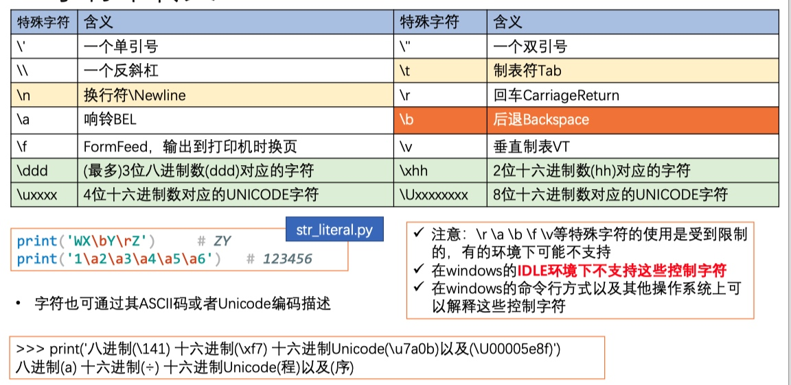
- 一些常见的转义字符
- \r Carriage Return CR 回车
- \b Backspace
- \ddd
- \xhh
- \uxxxx
- \Uxxxxxxxx
- 小结
- \表示后面的字符可能不是原有的含义，需要特别对待，即可能具有特殊含义
- 如果后面的字符的确有特殊的含义，则转义字符移走，使用特殊的含义
- 如果后面的字符并没有特殊的含义，则转义字符仍然保留，比如 ‘\c’包含两个字符：反斜杠和c
原始字符串¶
- 短字符串和长字符串的内容中如果有许多字符需要进行转义会比较繁琐
- 字符串界定符前面加字母r或R表示原始(raw)字符串，其中的特殊字符不需要转义
- 例子：
text = r'''要让变量a指向字符串"C:\Program Files (x86)\Python35\bin" 应该这样定义：a = "C:\\Program Files (x86)\\Python35\\bin" '''
- 例子：
- 不是所有的字符串都可以采用原始字符串定义，比如最后一个字符如果为\
- python解释器在进行词法分析时会解释转义字符以确定原始字符串是否结束，但是一旦确定了原始字符串的开始和结束位置后，之间的所有内容都作为原始字符串的内容，即转义符又失去了原来的意义
- 最后一个字符为\时可使用原始字符串(最后的\之前的内容) + ‘\‘实现
字符集和字符编码¶
- 字符集(Charset): 系统支持的多个抽象字符的集合，每个字符在该字符集中可以通过一个称为码点 (Code Point)的数字唯一标识
- 字符编码(Encoding)：字符集中的字符在计算机内部存储时如何表示，可映射为1个字节或者多个字节（称为Code Unit）
- Code Page: 内码表
- 最初IBM引入的概念，描述字符与计算机内部存储的字节之间映射的表格
- 微软/SAP/Apple等通过不同编号的内码表来描述字符集与内部存储之间的映射（即字符编码）
- 可将内码表、字符集和字符编码看成同一实体的不同角度描述
- Python3的字符串中的字符属于Unicode字符集
- 我们通过IDLE等编写的源文件(.py)采用Unicode字符集，其编码方式为UTF-8编码方式
- Unicode
unicodedata模块给出了访问unicode数据库的一些方法，包括所属的category、name、字符 宽度(east_asian_width) 等- 内置函数
ord返回字符对应的unicode。已知unicode，可使用内置函数chr返回对应的字符 - 字符串字面量定义中可以通过\ddd、\xhh、\uxxxx或\Uxxxxxxxx等描述相应码点对应的字符
- Unicode字符可采用UTF-8,UTF-16,UTF-32进行编码,将unicode对应的字符转换成字节序列
字符串相关内置函数¶
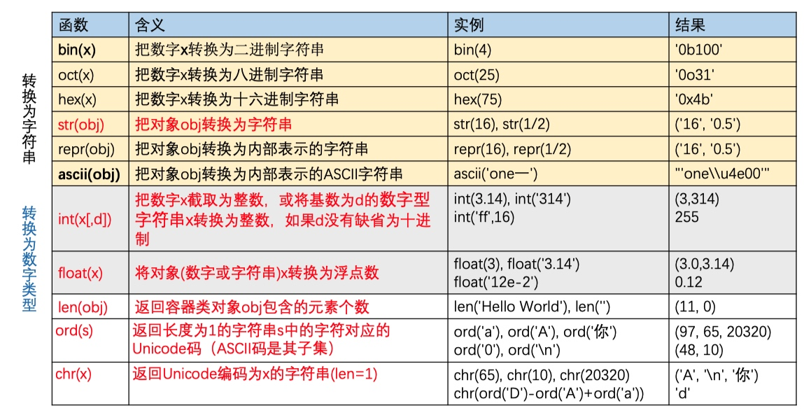
- str(obj) 返回一个对人友好的printable字符串，让用户了解该对象的相关信息。print函数的参数 可为任意对象obj，实际上输出的是str(obj)
repr(obj)返回描述对象的内部表示的字符串，让程序员了解该对象。该字符串存储的一般是可以写在程序中的字面量- ascii(obj) 与repr类似，只是非ASCII字符以\u…\U等转义方式, 制表回车换行以\t\r\n，其 他ASCII控制字符以\x…形式描述
- 格式说明符 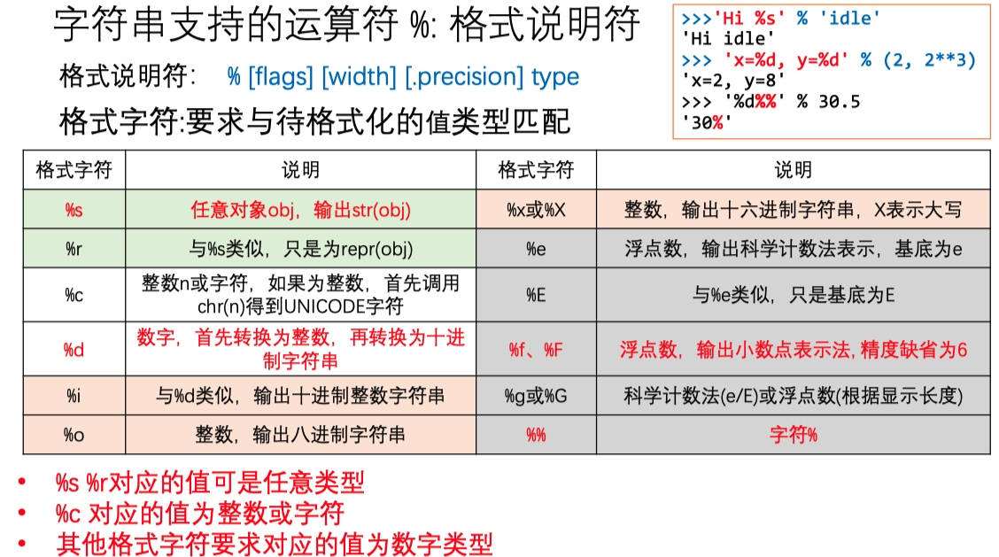 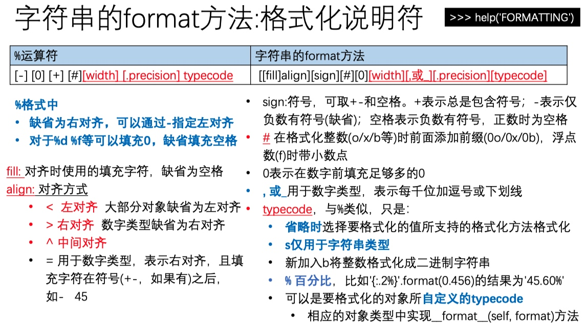
可迭代对象 iterable 和迭代器iterator¶
- iterable 对象(如 str, list, range, tuple, dict, set 等): 类比于一个魔盒
- 如何知道是否为iterable对象? dir(iterable)可看到其有
__iter__()方法 - 内置函数
iter(iterable)就是调用该对象的__iter__方法，返回一个迭代器 iterator
- 如何知道是否为iterable对象? dir(iterable)可看到其有
- iterator: 类比于一个打开的魔盒，每次按一下返回下一个元素
- 如何知道是否为iterator对象，dir(iterator)可看到有
__next__()方法 - 迭代器一般也是可迭代(iterable)对象，其__iter__()方法返回就是自身
- 内置函数
next(iterator)就是调用该对象的__next__方法，从迭代器返回下 一个元素，没有更多的元素时抛出异常StopIteration - 内置函数 sorted/reversed()/zip()/enumerate 等返回的是一个迭代器对象【sorted 好像不是，返回列表】
- 如何知道是否为iterator对象，dir(iterator)可看到有
- 一个一般的魔盒(iterable)可以打开多次， 每次返回一个不同的打开的魔盒 (iterator)。但注意如果魔盒(iterable)有 变化时，打开的魔盒(iterator)同样也会 有影响
- 一个打开的魔盒(iterator)一般也是一个 魔盒(iterable)，再打开时返回的就是同 一个打开的魔盒(iterator)
- 使用 for 循环来访问 iterable 对象的元素
- 该for循环会首先调用iter(iterable)获得一个迭代器对象
- 然后取迭代器对象的下一个元素，执行一系列语句
- 然后取迭代器对象的下一个元素，再次执行一系列语句， 如此继续…
- 直到取下一个元素出现StopIteration时循环结束
- range函数
- range(start, stop[, step])
- 返回一个range对象 ，是可迭代对象，产生一系列的 整数，范围[start,stop) 半闭半开区间
- 可以用list()函数将range对象转化为列表
列表¶
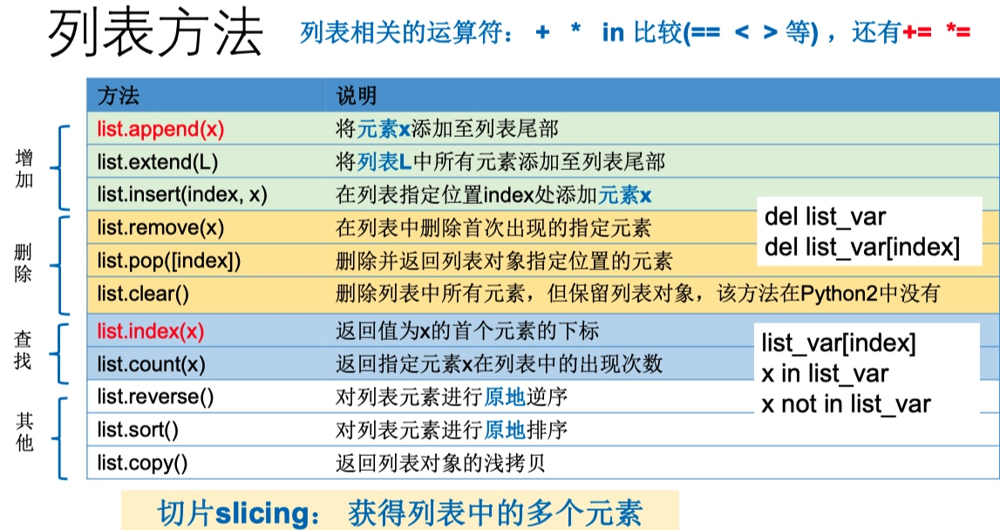
- 关于
x = [[None] * 2] * 3的形式- 在调用list方法构造列表、调用列表的方法增加元素或者采用加法和乘法运算符得到新列表，会有 多个引用(比如列表中的元素）指向同一个对象
- 对于乘法运算符尤其如此，新列表会有多个元素指向同一个对象(原列表中的对应位置的元素所指向的对象）
- 列表元素为可变对象时，列表进行进一步的运算时需要特别注意
- 一个可变对象，如果有多个引用（变量或者某个容器对象的元素）指向该可变对象。 通过其中一个引用来改变可变对象的值，另外的引用也会观测到值有变化
- 关于下标、切片、与拷贝
- 下标为整数时，list_obj[index] 出现在表达式中，表示访 问对应位置的列表元素
- 下标为切片时，list_obj[slice] 出现在表达式中，表示 列表中的那些指定位置的元素，得到一个新列表
- 该新列表的元素与原列表的对应元素指向同一个对象， 即新的列表返回的是列表元素的浅拷贝(shallow copy)
- 到现在为止介绍的列表操作(包括list函数)都是浅拷贝
copy模块的deepcopy方法进行深拷贝，即递归拷贝那些类型为容器对象的元素- 与使用下标访问列表元素的方法不同，切片操作不会因为下标越界而抛出异常， 下标超出范围时，仅返回能遍历到的元素或空列表，代码具有更强的健壮性
- 切片下标除了冒号形式外，也可以是一个slice对象。内置函数slice与range的用法类似【略】
- 切片操作
- 功能1：可以使用切片访问原列表中多个位置的元素，组成 新列表
- 功能2：可以使用切片原地修改列表内容：添加多个新元素
- list_obj[i:i] = iterable
- 功能3：可以使用切片原地修改列表内容, 替换或者删除元素【RFS 的长度可以不等于 LFS 长度，但当 step 不为 1 时必须相等】
- list_obj[start:stop:step] = iterable
列表排序¶
- 使用列表对象的sort方法进行原地排序。 help(list.sort)
- L.sort(key=None, reverse=False) -> 返回None， 默认基于元素间的大小关系排序，升序排列
- key缺省为None，表示基于元素间的大小关系排序。也可传递函数对象，作为排序的基准
- 使用内置函数sorted对可迭代对象(列表/字符串/元组等)进行排序并返回新列表
- sorted(iterable, key=None, reverse=False)
- 使用列表对象的reverse方法将元素原地逆序(即列表中元素出现的相反顺序），注意不等同 于 L.sort(reverse=True)
- 使用内置函数reversed对可迭代对象(如列表)的元素进行逆序排列并返回reversed对象
- sorted函数返回新的列表，但是reversed函数返回的不是列表
- reversed对象是一个可迭代对象，更是一个迭代器
- len(seq)：返回容器对象seq中的元素个数，适用于 列表、range、元组、字典、集合、字符串等
- max和min：两种语法
- max(arg1, arg2, args, key=func)、min(arg1, arg2,args, key=func): 传递的参数中的最大或最小值
- max(iterable, default=obj, key=func)、 min(iterable default=obj, key=func)：返回迭代 对象中的最大或最小元素，如果为空，返回obj
- key指出如何比较大小，即基于调用函数key(item)的大小来判断。缺省比较参数或者元素的大小
sum(iterable, start=0)：对数值型可迭代对象的元素进行求和运算，最后加上start（缺省为0）。 元素为非数值型时抛出异常TypeError
序列解包(sequence unpacking)¶
- 序列解包也称为 iterable unpacking，将可迭代对象拆分成各个元素，赋值给多个对象引用(如变量)
- 对象引用可以是变量名，可以是属性，可以是通过下标描述的容器对象中的元素，可以是通过 切片描述的列表中的一个或多个元素
- 赋值语句(LHS=RHS)中左边LHS为通过元组或列表形式描述的多个变量引用时，表示序列解包
- LHS通过圆括号和方括号(不引起歧义时可省略）组织对象引用，通过逗号分割引用
- RHS可以是任何可迭代对象，包括tuple、list、dict、range、str等，逐个按顺序（从左到右) 取 该可迭代对象的元素赋予左边对应位置的对象引用
- 基本序列解包，要求左边LHS中的对象引用个数与RHS中的元素个数相同
- 扩展序列解包，允许RHS的元素个数大于左边对象引用的个数，可使用带星号的对象引用 （*seq）来收集RHS中的多余元素
- 序列解包不仅仅用于赋值语句，而且可用于函数调用中
func(x, y, *seq, **map)- *seq 将可迭代对象seq的各个元素拆分后作为位置实参
- **map 将map对象(比如字典)的各个元素拆分后作为关键实参 (var=value)
- Python 3.5进一步扩充了序列解包的使用范围
- 序列解包也可用于序列(list,tuple,set,dict) 字面量定义中
- *seq 表示将可迭代对象seq的各个元素拆分为多个元素
- **map 表示将 map 对象（比如字典）的各个元素拆分为多个 key:value 对
*range(4), 4 # 元组字面量定义
*[range(4), 4] # 列表字面量定义
{*range(4), 4} # 集合字面量定义
{'x': 1, **{'y': 2}} # 字典字面量定义
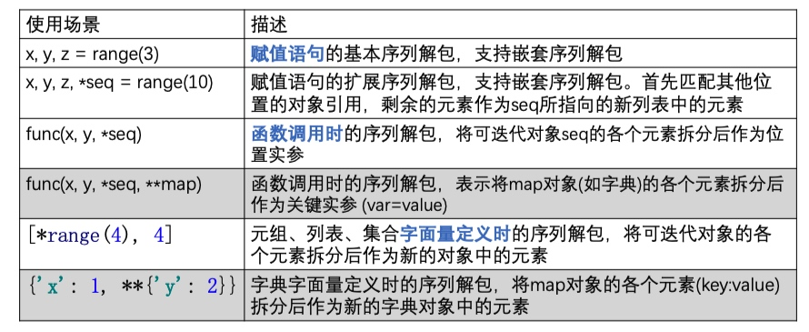
zip和enumerate¶
zip(iter1,iter2,…):返回一个zip对象，该对象是一个迭代器(iterator)对象- 传递的参数为可迭代对象(列表、字符串、元组、range等，甚至包括字典）
- 每次调用next(zip_object)会返回一个元组，该元组的元素为各个参数中对应位置的对象， 第一次为所有参数的第一个元素，第二次为所有参数的第二个元素…
- 如果这些可迭代对象的长度不一致，则该迭代器的元素个数为这些长度的最小值
- itertools模块包含了许多迭代器，其中
zip_longest(iter1, iter2, ..., fillvalue=None)返回zip_longest 对象- 与zip类似，只是迭代器的元素个数为所有可迭代对象参数的元素个数的最大值
- 如果某个可迭代对象参数没有更多的元素了，相当于下一个元素为fillvalue，缺省为None
enumerate(iterable[, start])：返回枚举对象，是一个迭代器对象，其每个元素为包含 下标和对应可迭代对象的元素的元组。第一个元素的下标从start开始，缺省为0
条件表达式¶
- 布尔(Boolean)类型的值只有True和False
- bool类型可以看成整数类型的特例，True和False的值分别为整数1和0
- 算术运算时, bool类型的对象obj首先转换为整数，即
int(obj)，然后计算 - 数字类型(包括int/float/complex)的对象也可以转变为bool类型的对象，称为真值判断
- 非0的数字对象转变为True，值为0的数字对象转变为False，比如bool(4) bool(-2) bool(0.0)
- 出现在if/while中作为决定分支走向或循环结束的条件的条件表达式expr
- 一般包括比较运算符，判断运算的结果是True/False
- 也可以是任何表达式，会进行真值判断 bool(expr)
- 一个对象一般真值判断为真，除非(真值判断为假)：
- 包含了
__bool__方法，由其返回值确定，或者__len__方法返回长度为0表示为假 - False/None/值为0的数值对象/长度为0的空序列对象
- 包含了
- 真值判断为True: 非0数值对象、非空序列对象
- 逻辑（布尔）运算符
- and:逻辑与
expr1 and expr2 and expr3比如n>= 0 and n < 10 - and运算采用左结合律，即从左到右进行运算
- 短路逻辑(short-circuit logic) 或惰性求值(lazy evaluation）
- 如果前面真值判断为假，不管后面条件(表达式)怎样，最终也是假值。后面表达式不需要计算
- 注意与其他语言不同，and/or运算返回的结果并不一定是True或者False，而是返回某个表达式的值 (用于if/while中的条件时再进行真值判断）
- and 返回的是最后一个决定真值判断的表达式的值，即第一个假的表达式（已经知道最终为假值)或者最后一个表达式（最终的真值判断由最后一个表达式决定）
- and : 返回第一个假(None、空或者数值0)的表达式或者最后一个表达式
- or: 逻辑或运算
expr1 or expr2 or expr3- 返回第一个真（非None、非空或者非0）的表达式或者最后一个表达式
- 三个逻辑运算符中: not优先级最高，and第二，or优先级最低
- if/else三元表达式:
value1 if condition else value2- 当条件表达式condition的值为True时，表达式的值为value1，否则值为value2
- 短路逻辑：不会同时对value1 和value2 求值
- 其他语言的三元表达式的语法一般为 condition?value1:value2
- and:逻辑与
- 在设计条件表达式时, 若能大概预测不同条件失败的概率或者根据表达式运算的开销, 可将多个条 件根据”and”和”or”运算的短路特性进行组织, 提高程序运行效率
- 表达式运算开销小的应该在前面进行求值
- and运算时失败概率高，or运算时成功概率高的表达式应该在前面求值
运算符优先级¶
- 除了**为右结合外，其他运算符都是左结合
- lambda < if-else < 逻辑运算符(or,and,not) < 比较运 算符 < 两元位运算 < 算术运算 < 一元运算 < 求幂运 算 < 下标、切片、函数调用、字面量定义等
- 赋值不是运算符，其采用右结合方式
- 首先定义对象，然后才可以运算 → 字面量优先级最高
- 函数调用、下标和切片、属性等返回对象 → 优先级次之
- 有了对象，可以进行计算 → 算术运算符次之，一元的优先级更高
- 计算后可以进行比较 → 比较运算符比算术运算符更低
- 比较以及成员判断的结果为True/False，可以进行逻辑运 算 → 逻辑运算比比较运算符低，单目逻辑运算符(not)更高
- 三元运算符及lambda表达式优先级最低 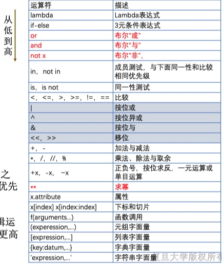
循环语句¶
- while 循环
- 循环变量：在循环过程中改变且作为循环条件的变量
- ★在循环体尾部以及continue处应该保证 循环变量有更新
- 循环体中：
- break语句，循环提前结束
- continue语句，当前轮次结束，提前进入下轮
- while还支持可选的else子句，当循环自然结束时 （不是因为执行了break而结束）执行else结构中的语句
- 循环的三种思路
- 用
while True:在循环中判断循环变量是否达到终止条件，用 break 跳出循环； - 不使用 break 语句，将循环结束条件归并到 while 后面的条件表达式中；
- 不使用 break，引入 done 变量（
while not done），在循环体发现循环结束时，设置 done=True
- 用
列表推导式¶
- 列表推导式/解析式（list comprehension）是利用其他可迭代对象(比如列表)中的各个元素 或者某些元素创建新列表的一种方法，非常简洁，代码具有强可读性
- 可迭代对象中的元素，通过表达式进行进一步运算，对应新列表中的元素
- if子句过滤掉可迭代对象中的一些元素
- 列表推导式中引入的变量相当于本地变量，仅在列表推导式中有意义
- 列表推导式中的表达式可是函数调用、元组列表等字面量定义、复杂表达式，还可以是一个列表推导式
- 多个for/if子句
- 第一个for(加上可选的if)之后可以跟0或多个for(加上可选的if)
- 从一个迭代对象中取value，在此基础上 从第二个迭代对象中取value2，如此…
- 从最后一个迭代对象中取valueN，这些 value进行运算作为新列表中的元素
- 补充:字典推导式和集合推导式
- 字典推导式可用来生成字典
{k:v for k,v in zip(['a','b','c'],[1,2,3])}
- 集合推导式可用来生成集合
{2*x for x in range(5)}
- 字典推导式可用来生成字典
[[i * j for j in range(1, 4)] for i in range(1, 4)] # 列表推导式中的表达式也是一个列表推导式
# 产生包含了所有两位偶数的列表
s1 = list(range(10, 100, 2))
s2 = [10 * x + y for x in range(1, 10)
for y in range(0, 10, 2)] # 多个 for 语句
s3 = [10 * x + y for x in range(0, 10) if x != 0
for y in range(10) if y % 2 == 0]
# 生成 100 以内的所有素数
prime = 0 not in [p % d for d in range(2, int(math.sqrt(p) + 1))] # 这个表达式可以判断 p 是否为素数
[p for p in range(2, 100) if 0 not in [p % d for d in range(2, int(math.sqrt(p) + 1))]]
生成器表达式¶
- 生成器表达式(Generator Expression)的语法与列表推导式基本相同，唯一的区别就 使用圆括号，列表推导式使用方括号
- 生成器表达式运算的结果并不是一个元组，而是一个生成器对象
- 生成器对象是一个迭代器对象，当然也是一个可迭代对象，可以用for循环访问，也可转换为列表等
- 【其和列表推导式的区别在于，这里是生成了一个 iterator，因此在当仅需要得到其中前几个结果的时候，效率会比较高。】如下例，勾股数 (pythogorian triplets)：存在{x,y,z}, 0<x<y<z,使得x^2+y^2=z^2【因为要一次性生成 1000^3 的结果，第一中实现的代价很高，对比下来若只需要生成前十个勾股数，则列表推导式需要 21s 而生成器表达式仅需 0.0004s】
def pyt_firstN_list(nums):
pyt = [(x,y,z) for z in range(1, 1000) for y in range(1,z)
for x in range(1,y) if x*x + y*y == z*z ]
firstN_pyt = pyt[:nums]
print(*firstN_pyt)
def pyt_firstN_generator(nums):
pyt = ((x,y,z) for z in range(1, 10000) for y in range(1, z)
for x in range(1, y) if x*x + y*y == z*z)
firstN_pyt = [next(pyt) for x in range(nums)]
print(*firstN_pyt)
递归调用¶
- 确定递归关系，将递归函数看成一个黑盒子，写出递归调用的代码
- 确定递归结束条件
- 递归函数的主要问题是不能超过系统允许的递归深度
- 递归调用经常采用记忆方法(memorization) 提升性能，记录已经求出的值【如下例，利用组合数的性质，第一种方式直接递归，后面的两种方式采用了 memory 记录已计算的结果从而提升效率（第三种通过嵌套函数定义使用闭包(Closure)，避免了全局变量）；实际来看，当参数为 50, 5 时，第一种方法需 0.5s 而后面两种均需 0.00015s，第三种的速度要稍快于采用全局变量的。】
def combination(n, i):
""" C(n,i) = C(n-1, i) + C(n-1, i-1) """
if n == i or i == 0:
return 1
return combination(n - 1, i) + combination(n - 1, i - 1)
combination_memories = dict() # 记录已经求出的C(n,i)的值, key=(n, i)
def combination2(n, i):
if n == i or i == 0:
return 1
if (n, i) not in combination_memories:
combination_memories[(n, i)] = combination2(n - 1, i) + combination2(n - 1, i - 1)
return combination_memories[(n, i)]
def combination_calc(n, i):
memories = dict() # 记录已经求出的C(n,i)的值, key=(n, i)
def combination(n, i):
if n == i or i == 0:
return 1
if (n, i) not in memories:
memories[(n, i)] = combination(n - 1, i) + combination(n - 1, i - 1)
return memories[(n, i)]
return combination(n, i)
字典¶
- 列表、元组等序列对象按顺序存储多个对象，这些对象可以通过整数下标来快速访问
- 字典是包含键-值对(key-value pair)的映射(map)类型的可变序列： key映射到一个value
- 保存的对象(value)是无序的【3.7 之后事实上是有序的】，通过key可以很快地找到其映射的value: dictobj[key]
- 不是按照key的大小顺序排列，具体顺序依赖于系统的内部实现
- python3.7开始，保留插入顺序，遍历时按照插入的顺序
- 已知对象(value)要找到其对应的key则需要许多额外的工作
- 键(keys)不允许（==关系意义上的）重复
- 各个元素的key可以是不同类型，但必须是可hashable的对象，即可调用hash(obj)得 到一个值
- 整数、实数、复数、字符串等不可变对象可以作为key
- 不可变的容器对象(如元组）有可能可以作为key，如(1,2)可以，但(1, 2, [1])不可以
- 值(values)可是任何对象
- 保存的对象(value)是无序的【3.7 之后事实上是有序的】，通过key可以很快地找到其映射的value: dictobj[key]
- 字典定义
- 1 可以通过字典字面量(literal)创建dict对象：按照先后顺序将元素加入字典， 如果后面的元素的key与之前的一致，则更新其对应的值
{key1:value1 ,key2:value2, … ,keyN:valueN}
- 2 可以通过dict()函数来创建dict对象
- dict() 创建空字典
- dict(mapping) 从一个mapping对象(描述多个key:value对，比如字典) 创建一个新的字典
- dict(iterable) 新字典的元素来自于iterable，iterable中的每个元素必须是一个包含2个子元素的容器对象。第一个子元素作为key，第二个子元素为value
dict(**kwargs)根据函数调用时传递的关键字参数(keyvar=value)创建一个新的字典, 该字典 的key为字符串类型，该字符串保存了关键字参数传递给出的变量名，而对应 的值为关键字参数传递的值，即对应的键值对为 ‘keyvar’:valued1 = dict(one=1, two=2, three=3)- 实际创建的字典为
{'one': 1, 'two': 2, 'three': 3}
- 3 通过dict类方法fromkeys创建新字典，每个元素的key来自于可迭代对象，值设置为value， 缺省为None
dict.fromkeys(iterable[,value])
- 4 支持字典推导式生成字典 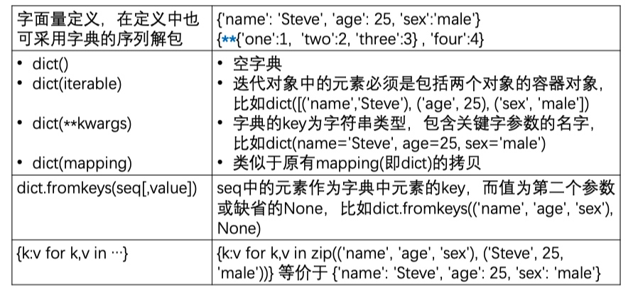
- 1 可以通过字典字面量(literal)创建dict对象：按照先后顺序将元素加入字典， 如果后面的元素的key与之前的一致，则更新其对应的值
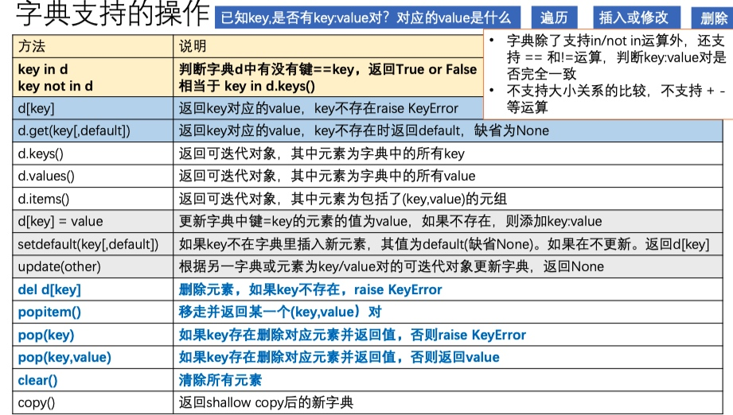
- 遍历字典
- len(d) 返回字典中元素的个数
- d.keys() 返回可迭代对象，其中元素为字典中的所有key
- d.values() 返回可迭代对象，其中元素为字典中的所有value
- d.items() 返回可迭代对象，其中元素为包括了(key,value)的元组
iter(d)返回迭代器对象，其中元素为字典中的所有key，类似于iter(d.keys())意味着d作为可迭代对象时，其元素为字典的key
- 更新字典
- d[key]=value: 如果key存在，则更新字典中键=key的元素的值为value；如果key不存在， 则添加key:value
- 更新(update)多个键值，【update的参数与dict()的参数类似】
- 将另一个字典another的键、值对添加到当前字典对象
- 将可迭代对象another中键、值对添加到当前字典对象，要求another对象中的元素为包含两 个元素的容器对象
- 可采用关键字参数传递
dictobj.update(another); dictobj.update(key1=value1,key2=value2)
- 字典元素的添加与修改：setdefault
- get(key[, default]) 返回d[key]或者default
setdefault(key[,default]), 返回d[key]或者default，但是如果key不在字典，会添加key:default【用来查询 key 返回对应的 value，若 key 不再字典中则会在字典中添加该记录，而不是像 get(key[, default]) 一样返回指定的默认值（默认为 None）】 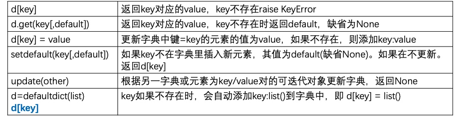
- 删除元素
- del d[key] 删除元素，如果key不存在，raise KeyError
- pop(key) 如果key存在，删除对应元素并返回值，否则raise KeyError
- pop(key,value) 如果key存在，删除对应元素并返回值，否则返回value
- popitem() 移走并返回某一个(key,value）对，如果为空 raise KeyError
- clear() 清除所有元素
defaultdict¶
- 模块collections中引入了一个特别的字典类型defaultdict
defaultdict(factory[,…])用于创建一个defaultdict对象- 第一个参数为一个可调用对象factory（函数），其余参数与dict函数的参数一样【例如类的构造函数】
- 字典的key:value对的value缺省值为 调用factory()所返回的结果
- dict的所有方法都可用于defaultdict
- 在通过dictobj[key]访问元素时：
- 如果key存在，返回dictobj[key]
- 如果key不存在，会首先设置dictobj[key]为一个缺省值，然后返回dictobj[key]
- dictobj[key] = value = factory(); return value
- 副作用是如果不小心写错了key，会增加一个新的元素
# key为某个同学的姓名，而对应的value为一个列表，记录了多次考试的分数。
# 假设某次考试成绩出来了，要保存名为name的同学的成绩score
# name, score = 'tony', 98
from collections import defaultdict
d5 = defaultdict(list) #创建一个空字典，值的缺省值为 list()，即空列表 []
d5['tony'].append(98)
序列解包(iterable unpacking)¶
【所谓的 map 类型，可理解为字典】
- 序列（可迭代对象）解包，可用在
- 赋值语句 x, y, z = 1, 2, 3; x, *y, z = range(10)
- 函数调用: print(*[1, 2, 3])
- 补充，字面量定义中：
[*[1, 2, 3], 4, 5]
- 补充，在字典字面量定义和函数调用时引入映射解包(mapping unpacking )
- 函数调用时，引入
**dictobj，dictobj的key必须为字符串类型，相当于传递多个关键字参数，每个关键字参数的名称为字典对象的元素的key(字符串)包含的名字(要满足变量名的要求），而关键字参数的值为字典对象中key对应的值 - 字典字面量定义时，引入**dictobj，表示将该字典展开成键值对的形式
- 函数调用时，引入
集合¶
-
{ } 定义的是空字典，而不是空集合，set()创建空集合对象 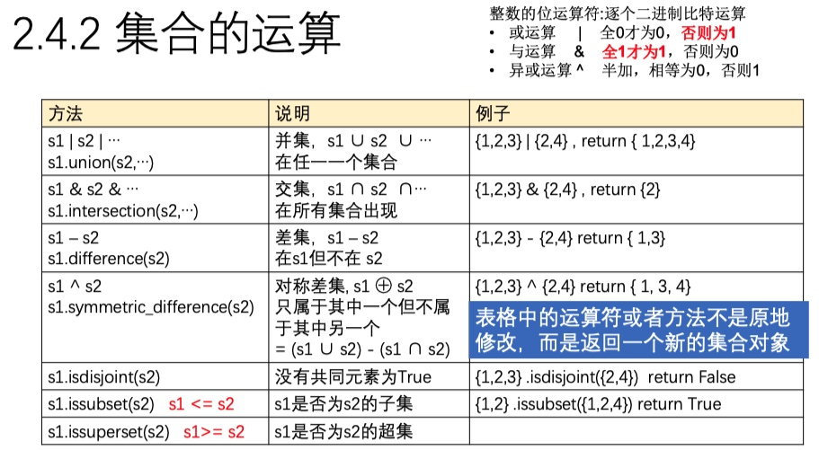 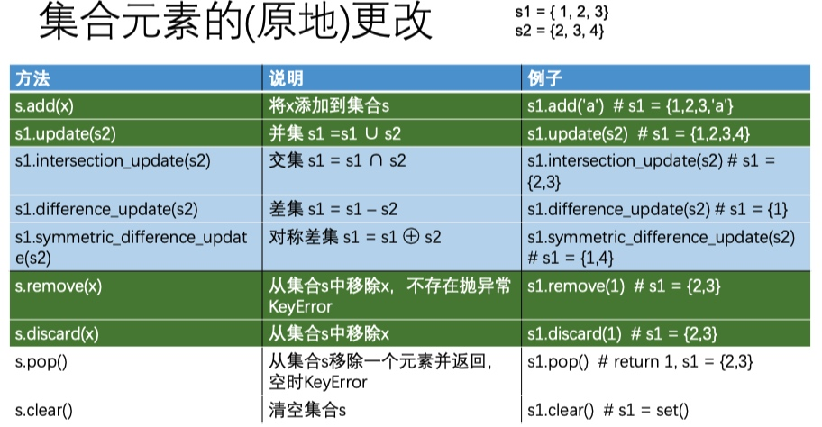
-
set推导式
- {2*x for x in range(5)}
- 不可变集合frozenset
- frozenset为不可变集合对象，只能通过forzenset()函数创建，与set()函数类似
- 除了集合元素的更改类的操作不支持外，set的其他操作都可应用于 frozenset
sorted() 再谈排序¶
- L.sort(key=None, reverse=False) 原地排序列表，返回None
- sorted(iterable, key=None, reverse=False) 对可迭代对象的元素排序，返回新的列表
- key也可传递函数对象，作为排序的基准
- 在调用时传递一个参数，该参数为要排序的iterable对象中的某个元素
- 函数调用的返回值作为给iterable对象中对应元素排序的基准
- 定义时一般也只有一个参数（实际上可有多个参数，但后面的参数应该为缺省值参数）
- 排序算法是稳定的，在基准相同时按照原有出现的顺序排列
- 【有时，可能需要按照两种标准进行排序，例如对于一个「人物」资料对象，先按姓名升序排序，姓名相同的按年龄降序排序——这时候 key 返回的基准应该有两个，借助 lambda 表达式如下（当然也可以实现一个函数然后 key 调用该函数）】
# 对于persons进行排序返回一个新的列表：先按姓名升序排序，姓名相同的按年龄降序排序
persons = [{'name':'Dong', 'age':37}, {'name':'Zhang', 'age':40},
{'name':'Li', 'age':50}, {'name':'Dong', 'age':43}]
sorted(persons, key=lambda person: (person['name'], -person['age']), reverse=False)
- 【另一个例子，要求去除列表中重复的元素，保留元素出现的顺序；当然这里指的是元素第一次出现的地方，因此可以用列表的 index(value) 方法，作为 key 进行排序】
import random
listRandom = [random.choice(range(10000)) for i in range(100)]
noRepeat = list(set(listRandom))
newList = sorted(noRepeat, key=listRandom.index)
# 注意 key 传入的是函数，这里调用了原本列表 listRandom 的 index 方法，参数为 noRepeat 的每一个元素
字符串 2：字符串方法¶
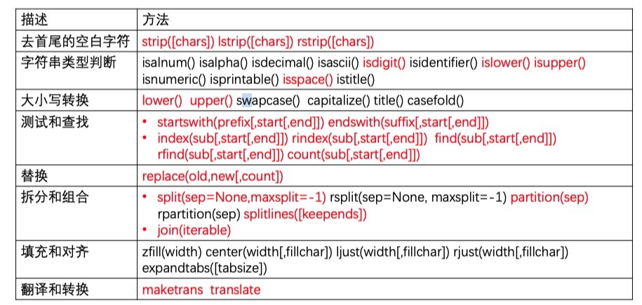
字符串类型判断： 根据Unicode字符集中的类型判断¶
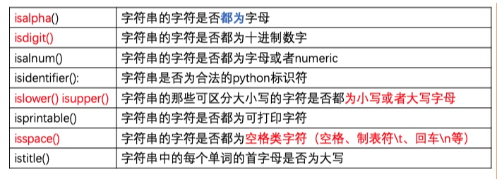
分割和组合: split和rsplit¶
- split(sep=None, maxsplit=-1)
- rsplit(sep=None, maxsplit=-1)
- 以指定字符串sep为分隔符分割字符串，返回一个字符串列表，元素为分割出来的字符串(不包括分隔 符)。如果字符串中sep连续出现，这些sep之间会分割出空字符串
- sep一般为单个字符，但也可以是多个字符
- 如果
sep==None：- 所有空白类字符（包括空格、换行符、制表符等等）都将被认为是分隔符
- 多个连续的空白类字符当成一个整体，即相当于一个空白分隔符。这样中间不会有空字符串出现
- 字符串最前面和最后面分割出来的空字符串会被移走
- 所有空字符串会被移走，每个字符串首尾都没有空格类字符
分割和组合: splitlines¶
- splitlines([keepends=False])
- 字符串根据换行类字符(包括’\n’)分割成多个子字符串，返回这些子字符串的列表。字符串最后为换行字符时，在该分隔符之后不会出现空字符串【但若开头为换行则第一个元素为空字符串，如
s3 = '\nab c\n\nde fgkl\n'; s3.splitlines()的结果为['', 'ab c', '', 'de fgkl']，设置保留换行符的结果为['\n', 'ab c\n', '\n', 'de fgkl\n']】 - 空字符串调用本函数时返回空列表
keepends=True表示保留分隔符(换行字符)
分割和组合: partition rpartition¶
- partition(sep) rpartition(sep)
- 以指定字符串sep为分隔符分割最多一次，将原字符串分割为包括3部分的元组，即sep前的字 串、sep、sep后的字符串，如果指定的分隔符不在原字符串中，则返回原字符串和两个空字符串
分割和组合: join¶
- strobj.join(iterable)
- 将iterable对象(列表,字符串等)中 的多个元素组合在一起，元素间 插入相应的分割字符串strobj， 返回新的字符串
- 注意 iterable 对象中的元素必须是字符串
大小写转换¶
- lower() 返回小写格式的字符串
- upper() 返回大写格式的字符串
- capitalize() 返回字符串中首字母大写,其他字母小写
- title() 返回字符串中每个单词首字母大写，其他小写
- swapcase() 返回字符串中大小写互换
测试和查找：是否以prefix开头或suffix结尾¶
- startswith(prefix[,start[,end]])
- endswith(suffix[,start[,end]])
- prefix和suffix可以是字符串
- 也可以是一个元组，其每个元素为一个字符串，表示是否其中任意一个字符串开头或结尾
成员判断和查找¶
- 有序序列都支持 in, count, index, str也不例外
- sub in S sub not in S 判断子串sub（不仅是单个字符）是否在S中出现
- index(sub[,start[,end]]) 返回子串sub在指定范围内首次出现的位置(下标)，如果不存在则抛 异常ValueError
- count(sub[,start[,end]]) 返回子串sub出现的次数，找到一个子串后，在下一个位置继续找…
- rindex(sub[,start[,end]]) 返回子串sub在指定范围内最后一次出现的位置(下标)，如果不存在则抛异常ValueError
find(sub[,start[,end]]) rfind(sub[,start[,end]])与index/rindex类似，返回子串sub在指或最后一次出现的位置，如果不存在则返回-1
字符串转换: maketrans translate¶
- replace方法只能串行替代，而不能并行替代!
- 将字符串中的某些字符并行替代为另外一些字符或删除: 首先maketrans构造映射表， 然后translate进行实际的替换【事实上就是构造 Unicode 数字之间的映射关系，见下例】
- 静态方法maketrans(x,y[,z]]) 如果有两个以上参数，x和y必须长度一致，每一个在x 出现的字符转换为y对应位置的字符，如果有第三个参数，表示在z中出现的字符转换 为None，即删除
- strobj.translate(table)按照映射表对strobj进行转换，返回转换后的新字符串
- 静态方法maketrans创建的映射表，实际上就是一个dict，该字典的key为字符的unicode(整 数)，而value为
- 如果为整数，则是要替换为的字符的Unicode
- 如果为None，则表示删除
- 如果为字符串，则原来的字符替换为相应字符串
- maketrans(mapping)，只传递一个字典参数，将某个字符映射为一个字符或多个字符或None
- 该字典的key应该为一个单个字符ch或者ord(ch)返回的整数(即unicode码点)【但是可能为字符串】
- 值可以是
- None，表示删除该字符
- 一个字符串，表示替代为该字符串
- 整数n，表示替换为chr(n)
# 利用 maketrans translate 方法实现简单的加密
s = 'Great hopes make great man.'
tab = str.maketrans('abcde', 'uvwxy', '.?'))
# tab: {97: 117, 98: 118, 99: 119, 100: 120, 101: 121, 46: None, 63: None}
ss = s.translate(tab)
# 'Gryut hopys muky gryut mun'
ss.translate(str.maketrans('uvwxy', 'abcde')) # 解密
# 将字符替换为字符串
s2 = 'dlmao@fudan.edu.cn'
tab3 = str.maketrans({'@':' AT ', '.':' DOT '})
s2.translate(tab3)
# 'dlmao AT fudan DOT edu DOT cn'
字符串编码 2：str 与 bytes¶
- 字符集(Charset):系统支持的多个抽象字符的集合，这些字符在该字符集中通过一个称为码点 (Code Point)的数字唯一标识
- 常用字符集包括ASCII/GBK/Unicode
- 保存在外部存储(硬盘/U盘等）中的数据以字节方式保存
- 基于某种(UTF-8)编码方式，将其解释为Unicode字符集中的字符串str
- 【文件以 UTF-8 或者其他编码方式保存为字节 bytes，经过解码得到字符串 str，为 Unicode code point；同样字符串经过编码得到字节 bytes】
- Python3的字符串为Unicode 字符串，采用UTF-8 编码
- 我们通过IDLE等编写的源文 件(.py)其编码方式为UTF-8
- unicode字符串str与字节串bytes之间的转换
- 类型bytes类似于str，也是一个不可变的有序序列类型， 只是其元素为单个字节，而str中每个元素为单个字符
- 字面量定义：和str类似，只是在之前添加b或者B即可，比如
b'abcd' - 类型bytearray与bytes类似，只是其为可变序列类型
- 字面量定义：和str类似，只是在之前添加b或者B即可，比如
str_obj.encode(encoding='utf-8', errors='strict')- encoding参数给出编码方式，缺省为utf-8，常用的编码还包括ascii, latin1, gbk等
- errors参数指出在编码/解码过程中无法转换时怎么办？缺省‘strict’，即 比如某些字符不属于相应字符集中的字符，或者某些字节不是合法的字节序列 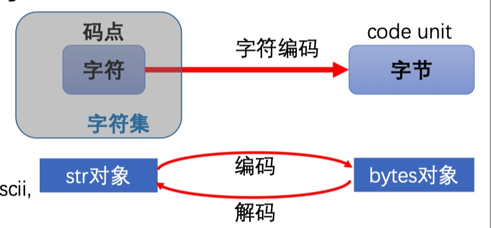 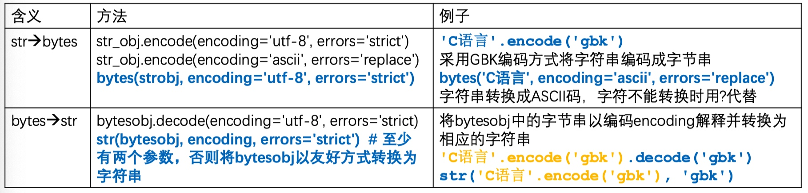
- errors参数指出在编码过程中由于某些字符不属于相应字符集中的字符从而无法转换时怎么办
- strict(缺省):抛出异常UnicodeEncodeError
- ignore：忽略并跳过无法编码的字符
- replace:无法编码时替换为缺省替换字符，一般为?
- backslashreplace:无法编码时替换为通过\进行转义的转义序列
- xmlcharrefreplace：无法编码时替换为XML表示方式
- namereplace: 替换为用名字描述的Unicode字符特性\N{…}
bytesobj.decode(encoding='utf-8', errors='strict)str(bytes_or_buffer[, encoding='utf-8' [, errors='strict']]) -> str
- 类型bytes类似于str，也是一个不可变的有序序列类型， 只是其元素为单个字节，而str中每个元素为单个字符
- 系统缺省的编码方式
- 模块sys和locale提供了相应的方法来查看与字符串编码相关的信息
- locale描述了本地化设置，语言_区域.字符集，表示在指定区域说某种语言的人的一些基本的习惯(时间、数字、字符类型和排序等) ，比如zh_CN.UTF-8， en_US.UTF-8等
import sys, locale
sys.getdefaultencoding() # 解释器所采用的缺省字符串编码方式, python3一定是'u 'utf-8'
sys.getfilesystemencoding() # 操作系统文件名与unicode文件名之间转换采用的编码方式
locale.getdefaultlocale() # 获得本地化设置，(语言,编码)
locale.getpreferredencoding() # 获得用户打开文本文件缺省的编码方式, cp936 = GBK
文件操作¶
- 按照数据的组织形式，文件可分为文本文件和二进制文件
- 二进制文件
- 存储的是一个一个的字节，无法用常规的文本编辑器读写
- 包含：数据库文件、图像文件、可执行文件、音视频文件、Office文档等
- 文本文件
- 存储文本字符串，由若干行组成，行之间以行分隔符(EOL, linebreak)隔开
- 可通过文本编辑器正常显示、编辑，人类能够直接阅读和理解
- 文本文件里面的字符采用某种编码方式编码后保存到存储设备上
- 尽管不同操作系统使用的行分隔符可能各不一样，但是python解释器在进行文本文件的读写时统一用
\n(new line)作为行分隔符，会自动进行相应的转换- 系统缺省行分隔符：Windows 为 ‘\r\n’，Linux 为 ‘\n’，macOS 为 ‘\r’
- 可通过
import os; os.linesep查看
- 为什么有回车换行？早期英文打字机上：
- 回车符(Carriage Return, \r): 回到carriage开始的位置（最左边)
- 换行符(Line Feed, \n): 往下移动一行
- 文件和目录
- 每个文件或目录可以通过目录树中从根节点开始，按照树的结构找到其子节点，如此继续 直到到达指定的位置
- 在Linux和MacOS系统中只有一棵目录树，而微软操作系统中对于每个驱动器维护一棵 目录树(C:; D:…)
- 路径名(pathname): 从起点开始直到结束位置途中经过的节点名字组合在一起，之间通过路径分隔符隔开
- Linux和MacOS系统中为’/’，而微软系统中为’\‘
- 在实践中都可以使用/分割路径名，python会转换为操作系统所采用的路径分隔符
- 可通过
os.sep查看
- 每个文件或目录可以通过目录树中从根节点开始，按照树的结构找到其子节点，如此继续 直到到达指定的位置
-
打开文件
open(file, mode='r', encoding=None, errors=None)- 以指定模式打开相应的文件，返回某种类型的文件对象
- 文件名file: 可包括路径部分，如果路径分隔符为\，则需要转义， 或者采用原始字符串定义。或者/作为路径分隔符
-
访问模式(mode)：第2个参数，打开文件后的处理方式
rwxa必须指定一个，且只能指定一个tb+(红色标记值) 可选，缺省为t，即文本方式打开- 如果不指定mode，默认为‘r’，即打开文本文件读 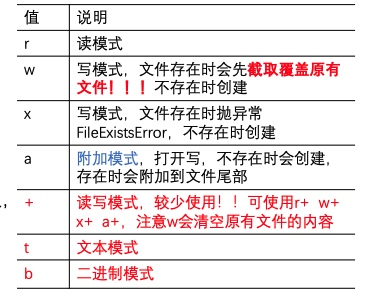
-
编码方式(encoding)：以文本方式打开时所采用的编码方式
- 缺省为
locale. getpreferredencoding()返回的编码方式 - 如果为’cp936’，表示GBK
- 缺省为
- errors: 文本文件读写时编码或解码出现错误时怎样处理
- 文件对象的属性
- name 文件名
- mod_e 打开模式
- encoding 编码方式，仅对文本方式有效
- errors 编解码出错时的处理方式
- closed 是否_已经关闭
- 文件对象的操作 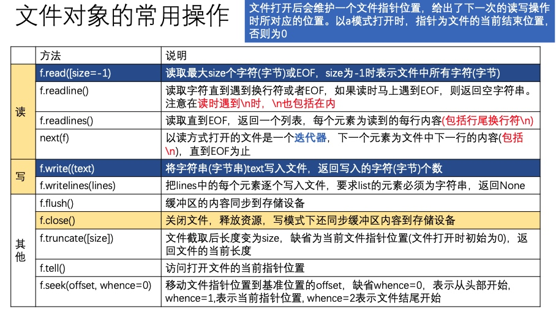
- 文本文件读： read
- 打开文本文件读，模式为’rt’或者其他读写模式（如’w+’)，文本模式(t)可省略；如果不指定编码(encoding)，缺省为locale.getpreferredecoding()
- read(size=-1)：从文件中读取size个字符（注意不是字节，而是unicode字符)，或者到文件 结尾为止，如果size小于0则表示读取之后的所有内容
- seek(offset, whence=0)
- 可以将文件指针移动到文件的某个位置 （偏移量）
- 缺省为从文件开始处算起的第几个字节；whence=0表示从文件开始；whence=1表示当前位置,whence=2表示文件结尾
- 对于文本文件而言，whence必须为0，不支持非0的偏移
- tell(): 返回当前文件的指针所在位置(距离文件 开始多少个字节）
- file支持iterator协议，意味着调用next(file)获得下一行，即相当于file.readline()
序列化¶
- pickle模块提供了将python对象序列化成字节流以及从字节流中反序列化的功能
- marshal模块提供与pickle模块类似的功能，主要用于读写.pyc文件，其主要问题是不能序列化 用户自定义的对象，且不同版本的python解释器序列化后的结果不兼容
- json模块提供类似于pickle模块的接口，只是在python对象与json格式的字符串之间进行转换
- shelve模块在pickle模块的基础上采用类似于字典方式来序列化对象
- 可以序列化的对象包括
- None，布尔、整数、浮点数和复数
- 字符串，bytes和bytearray
- tuple/list/set/dictionary，但要求其元素也是可 以序列化的对象
- 模块顶层通过def定义的函数和类
- 自定义类的实例对象，但有一些要求（略过）
- 注意函数和类序列化时仅保存模块名+函数名或类名，其代码和属性等并没有序列化
pickle¶
- dumps(obj) 将对象obj序列化为一个bytes对象并返回
- dump(obj, file) 将对象obj序列化后写入到文件对象file中
- loads(bytes_obj） 从bytes_obj中反序列化后返回一个python 对象
- load(file) 从file中反序列化一个python对象后返回, 如果文件结尾，抛出异常EOFError
JSON¶
- JSON(JavaScript Object Notation) 是一种轻量级的数据交换格式。方便阅读和编写，也方便机器解析和生成。它基于JavaScript Programming Language, Standard ECMA-262 3rd Edition - December 1999的一个子集， 采用完全独立于语言的文本格式，要求采用UTF编码方式，建议UTF-8
- 字符串采用双引号定义，支持转义
- 整数和浮点数
- true/false/null
- array:相当于python中的列表
- object(对象)相当于python中的字典，但是其 key 必须为字符串
- json.load(fp) / json.loads(s) 从文件对象fp(只要支持read即可)/ 从字符串或bytes对象中 反序列化json对象，返回相应的python对象
- json.dumps(obj,....) 将对象序列化，返回序列化后的字符串
json.dump(obj, fp, *, skipkeys=False, ensure_ascii=True, check_circular=True, allow_nan=True, cls=None, indent= None, separators=None, default=None, sort_keys=False, **kw)将对象序列化成字符串并写到文件对象fp，要求fp 支持write方法即可
csv¶
- CSV(Comma-Separated Values ）
- excel(一般为xlsx或xls格式)可以将电子表格(spreadsheet)以csv格式保存。 RFC 4180 定义了CSV的标准格式
- 一个电子表格包括多个记录(行)，每个记录包括了多个字段。一般第一条记录给出了各个字段的名字
- 记录之间通过\r\n分割；字段之间通过逗号分割
- 字段中如果包含了记录分隔符或字段分隔符时，需要用双引号括起来，如果双引号出现在字段中，则用 两个连续的双引号代替
- 内置模块csv提供了对于csv格式的文档的读写支持
csv.reader(csvfile, dialect='excel', **fmtparams)- csvfile为可迭代对象, 其每个元素为字符串。如果csvfile为文件对象，建议
newline=''【例如，可以是字符串的序列。注意，open 打开的文件也是可迭代对象，即 open(file, newline=’‘)】【这里设置 newline=’’ 应该设为了不同操作系统的默认分隔符的不同带来的问题】- On input, if newline is None, universal newlines mode is enabled. Lines in the input can end in ‘\n’, ‘\r’, or ‘\r\n’, and these are translated into ‘\n’ before being returned to the caller. If it is ‘’, universal newline mode is enabled, but line endings are returned to the caller untranslated. If it has any of the other legal values, input lines are only terminated by the given string, and the line ending is returned to the caller untranslated.
- On output, if newline is None, any ‘\n’ characters written are translated to the system default line separator,os.linesep. If newline is ‘’, no translation takes place. If new line is any of the other legal values, any ‘\n’ characters written are translated to the given string.
- dialect给出了csv文件的若干配置参数的缺省值，对于 excel而言，delimiter=’,’, lineterminator=’\r\n’, quotechar=’“’, doublequote=True, quoting=QUOTE_MINIMAL, skipinitialspace=False (是否忽略字段前面的空格）
- 返回reader对象，其是一个迭代器对象，每个元素对应一条记录，每个记录以字符串列表方式呈现
- csvfile为可迭代对象, 其每个元素为字符串。如果csvfile为文件对象，建议
csv.writer(csvfile, dialect='excel', **fmtparams)- csvfile为支持write的对象，建议newline=’‘
- 返回writer对象，可通过writerow方法写入一条记录，其参数为可迭代对象，可迭代对象中的元素 对应记录的字段，将其转换为字符串后写入到csv文件
- csv.DictReader(csvfile,…)
- csv.DictWriter(csvfile, fieldnames=…,)
- 每一列通过字段名描述，传递的记录不 是以列表等
import csv
def csv_writer(file='eggs.csv'):
with open(file, 'w', newline='') as csvfile:
writer = csv.writer(csvfile)
writer.writerow(['Spam'] * 5 + ['Baked Beans'])
writer.writerow(['Spam','Lovely Spam','Wonderful Spam'])
def csv_reader(file='eggs.csv'):
with open(file, newline='') as csvfile:
reader = csv.reader(csvfile)
for row in reader:
print(', '.join(row))
shelve¶
- 在pickle模块的基础上提供类似于字典的接口
- 字典的key为字符串，而值为要序列化的python对象
- 底层实际上是通过一个数据库来保存序列化的对象
- 通过赋值语句来更新key:value时表示序列化对应的python对象
- 通过key来访问对应的value时表示反序列化
open(filename, flag='c', writeback=False)- 表示以读写方式打开一个名为filename的数据库，返回一个类似于字典的shelve对象，可以使用dict支 持的所有方法。打开的数据库实际对应的可能是多个文件，这些文件前缀一致，而后缀不一样【内部使用 pickle序列化】
- 参数flag表示如何打开数据库，缺省c表示为以读写方式打开，不存在时首先创建再打开。其他取值可 为’r’ ‘w’等，表示以只读方式、读写方式打开
- 缺省writeback为False，表示只有在赋值更新key:value时才会序列化到数据库中
-
如果writeback=True，表示通过字典访问的对象保存在cache中，在sync和close时自动将cache中的 python对象序列化到数据库中。其缺点是缓存对象需要更多的内存，带来性能的下降 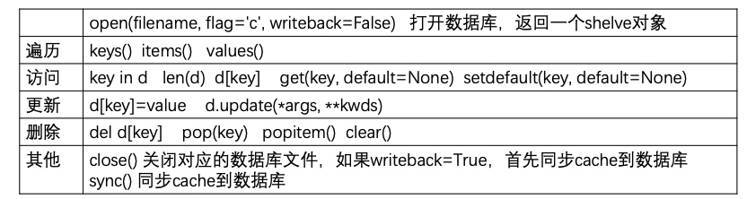
-
打开shelve对象传递参数writeback=False时
- del d[‘key’] 删除’key’对应的序列化后的对象
d['0001']=person: 序列化对象【保存到数据库中，若需要修改数据库中的记录只能采取这种方式而不能像下面这样】- d[‘0001’] 在表达式中表示从数据库中反序列化对象【因此用 append 等操作无法进行修改！！】
- d[‘0002’][‘phones’].append(‘137xxxx’) 不会更改d[‘0002’]的值
- 打开shelve对象传递参数writeback=True时
- 内存中通过cache来缓存数据库的对象
- 通过sync()或close()同步cache到数据库中【但是 d[‘0002’][‘phones’].append(‘137xxxx’) 同样不会更改d[‘0002’]的值】 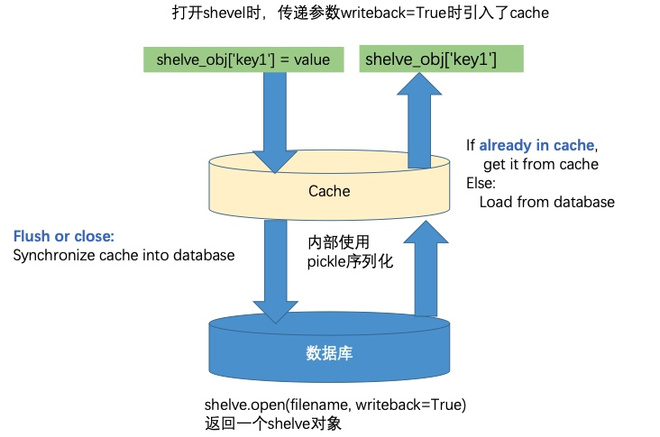
异常¶
- 在其他（编译型，比如C）编程语言中语法错误不属于异常
- Python为解释型语言，但是在运行时解释器也会首先将代码转换为中间代码，如果发现语法有错误，就会报语法错 SyntaxError
- 执行过程中检测到一个异常时，如果不捕获异常，解释器就会指出当前代码已无法继续执 行下去而退出。但要注意导致异常出现的真正原因可能在之前
- 逻辑错误不属于异常：逻辑错误也是最难发现的bug之一
- 可以首先通过常规的检查，如if…else判断，避免代码出现异常。在常规检查和直接依赖异 常处理两者之间进行权衡
- 当程序出现错误，python会自动引发异常，也可以通过raise显式地引发异常
dir(__builtins__)查看内置函数以及内置的异常类型 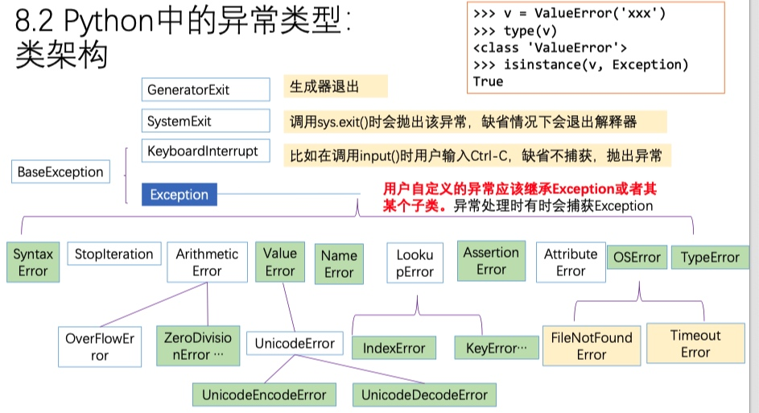- 常用异常类
- Exception 几乎所有异常的基类(base class)
- SyntaxError 语法错误
- NameError 访问一个没有定义的变量
- AttributeError 访问对象的属性时出错
- IndexError 下标不存在
- KeyError 字典的key不存在
- TypeError 内置的运算符或者某个函数作用的对象的类型不符
- ValueError 内置的运算符或某个函数作用的对象类型相符，但是值不合适
- ZeroDivisionError 除法类运算中除数为0
- OSError 执行操作系统操作时出现错误，比如文件不存在等
- AssertionError 断言异常
try:
<body> # 执行<body>中的代码
except [expression [as identifier]]:
<exceptionBody>
# 可以有多个except子句，出现异常时按序匹配找到对应的exception为止。不带表达式的except等价于 except Exception，应该是最后一个
except [expression [as identifier]]:
<exceptionBody>
else: # 可选的，<body>顺序执行完且没有异常出现时会执行该块的代码
<elseBody>
finally: # 可选的，不管有没有异常(甚至是从body 中break/continue/return)，异常是否捕获都要执行
<finallyBody>
- except关键字后面的expression应该为：
- 异常类,比如ValueError, KeyError等
- 异常类的元组，表示其中任一异常出现，如 (ValueError, TypeError)
- raise语句: 主动抛出异常
raise [expression [from orig_exception]]- expression必须是：
- 一个异常类的实例对象
- 一个异常类，此时系统会首先创建一个该类的实例(参数为空)，然后抛出该异常对象
- from orig_exception: 给出了将两个异常连接起来的方法，表示异常是由于另一个异常(orig_exception)引起的
- 单独的raise一般出现在except块中，表示重新抛出正在匹配的异常，如果当前没有，则抛出RuntimeError异常 (No active exception to reraise)
- 自定义异常类
- 应该继承Exception类或者其子类：Exception为所有可能需要捕获的异常类的基类
- 通过调用构造函数创建一个异常对象
- print(t)等价于调用print(str(t))
- 异常对象的args属性为元组，给出了构造异常对象时传递的参数
- 应该继承Exception类或者其子类：Exception为所有可能需要捕获的异常类的基类
class MyError(Exception):
def __init__(self, value):
self.value = value
def __str__(self):
return repr(self.value)
try:
raise MyError(2*2)
except MyError as e:
print('My exception occurred', e)
raise
- finally
- 不管有没有异常出现，有没有捕获，finally代码都会执行
- 如果异常没有被捕获，finally代码执行完后重新抛出异常，但是：
- 如果finally代码中出现return以及break，则异常被取消，不会再抛出
- python3.7之前，finally代码中不能使用continue语句， python3.8取消了这一限制，显然 finally部分有continue也会导致异常被取消
- (try语句在循环中才可使用break，在函数体内才可使用return）
- 一些特殊的情形的总结：
- 如果在try body中执行到break/continue/return时，不会执行else block的内容
- finally一定会执行，如果执行到break/continue/return时，该语句起作用，之前本来要执行的动作不再执行【例如本来函数运行正确 return 某个值，若在 finally 中还有 return 语句的话会使得 try 中的 return 失效！】
- 只有在没有异常，或有异常且已捕获，且没有执行到break/continue/return时，才会顺序 执行try语句后的语句
traceback¶
- 发生异常时，Python可以回溯异常，给出大量的提示
- 在有异常出现时，可通过sys模块的exc_info()获得正在发生的异常的信息，返回的三元组包含异常类型、 异常对象以及一个包含调用栈信息的traceback对象
- traceback模块的print_exc()会打印最近异常（包括调用栈在内）信息。 而format_exc()与print_exc()类似， 只是返回的是字符串 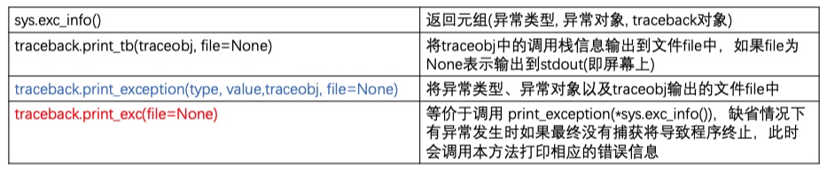
import sys,traceback
try:
4 / 0
except Exception as e:
ex_type, ex_info, ex_traceback = sys.exc_info()
print(ex_type, ex_info, ex_traceback)
traceback.print_tb(ex_traceback) # 打印调用栈信息
# 将异常类型、异常对象以及traceobj输出的文件file中，默认的 file=None 表示输出到 stdout
traceback.print_exception(ex_type, ex_info, ex_traceback, file=None)
traceback.print_exc() # 和上面的 print_exception 结果一样
# 下面是捕获了错误，但是捕获之后无法查看调用栈了？
print()
print(type(e), e)
eval()和exec()函数¶
eval(source, globals=None, locals=None)- 执行source中的代码，source一般为字符串，包含的代码必须为表达式。该表达式在globals和locals指出的环境（缺省为当前环境）下执行，运算后的对象作为返回值。如果指定了globals和locals，则只会查找指定名字空间的名字
exec(source, globals=None, locals=None)- 与eval类似，执行source对应的代码，返回None
- 注意，eval 语句可能是不安全的
- 例如在 Windows 下
cmd = "__import__('os').startfile(r'C:\\Windows\\notepad.exe')"; eval(cmd)就有可能打开 Notebook - __import__为模块builtins对象（builtins）中的内置函数，eval可以传递第二个参数(名字空间)，这样在计算表达式时会查看第二个参数给出的名字空间中的名字【见下例】
- 除此之外，还可以采用 ast 模块
- 例如在 Windows 下
cmd = "os.startfile(r'C:\\Windows\\notepad.exe')" # 只有 Windows 平台下
# 修改命名空间以保证安全
safe_dict = {"__builtins__": {}, "os": None }
eval(cmd, safe_dict)
# 还可利用 ast 模块
import ast
ast.literal_eval(cmd)
- 当然，exec 有着类型的问题
# 利用 exec 执行系统指令（打开其他软件）
txt = "import os; os.system('open /Applications/iTerm.app')"
exec(txt)
上下文管理¶
- with 语句
- 使用with语句进行上下文管理，在with block结束时会释放资源
- 不管异常是否出现都会释放在进入时获得的资源
- 避免了try…finally结构中的资源释放问题
- 用户可以自己实现某个资源的上下文管理:
- 依赖于python语言的magic method(上下文管理协议)，实现
__enter__()和__exit__()两个方法【见下例】 - 或者通过
import contextlib，并使用@contextlib.contextmanager方式实现
- 依赖于python语言的magic method(上下文管理协议)，实现
# with 语句进行上下文管理
with context_expr [as obj]:
with_block
# 等价于下面的 magic method 实现
obj = context_expr
obj.__enter__()
try:
with_block
finally:
obj.__exit__()
re 模块¶
- 引入正则表达式：
- 可以判断某个模式(pattern)是否在字符串中出现
matchobj = re.search(pattern) - 可以知道模式在字符串出现的位置以及匹配的内容 matchobj.span() matchobj.group()
- 可以根据模式来分割字符串，可以根据模式来替换字符串 re.split(…) re.sub(…)
- 可以判断某个模式(pattern)是否在字符串中出现
正则表达式: 子模式/group¶
- 分组 (group)
- 要匹配的模式中，可以将其分成多个部分，其中的几个特定的部分加上括 号，这些加括号的部分称为group或子模式
- 引入子模式的目的：获取子模式匹配的内容；子模式作为整体可重复多次
- 每个group有一个编号: 按照从左到右的左括号的顺序从1开始进行编号。 编号0表示整个匹配的模式
- group可以嵌套，如’((jump)ed for) (food)’
正则表达式：模式对象¶
- 首先调用re模块的
compile方法将其编译成一个正则表达式(或模式)对象(类型为re.Pattern)。模式对象的属性pattern保存了正则表达式 re.compile(pattern[,flags])- 其中 pattern 为字符串类型，描述要匹配的模式
- flags 描述匹配时的所采用的选项。re模块定义了多个常量，通过运算符 | (按位或) 包含多个选项
- 匹配选项可以采用短格式(如re.I)，也可采用长格式(如re.IGNORECASE)，多个选项 可以通过|运算符（位运算符或）组合， 比如
re.I | re.A【表示忽略大小写，空白符定义基于 ASCII，并且有默认的选项，空白符定义基于 Unicode（re.ASCII == 256, re.UNICODE == 32）】 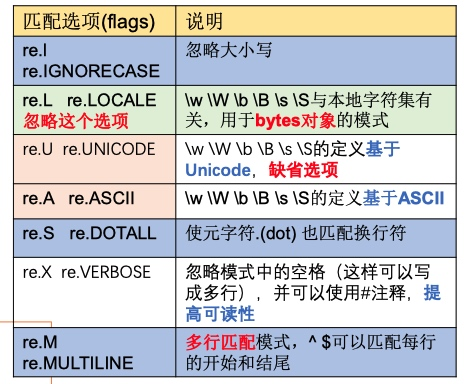 - 什么时候需要使用多行匹配模式？
- 调用file.read()得到的是多行字符串， 且匹配模式时希望通过^ $等来逐行 匹配时
- 如果file.readline()得到的是一行的内 容，则不需要用多行模式
- re.VERBOSE
- 忽略模式中的空格类字符（这样可以写成多行，也可添加 空格），并可以使用#注释，提高可读性
pattern = r"""
(?P<first_three>[\d]{3}) # The first three digits…
- # A literal hyphen…
(?P<last_four>[\d]{4}) # The last four digits…
"""
m = re.search(pattern, '867-5309', re.VERBOSE)
正则表达式：模式对象的主要方法¶
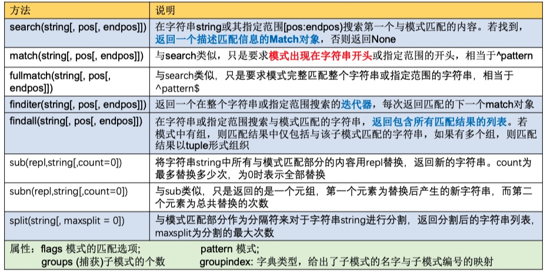
search¶
match = regexp.search(text)- 在字符串string或其指定范围string[pos:endpos)搜索第一个与模式匹配的内容。若找到，返回一个描述匹配信息的Match对象，否则返回 None 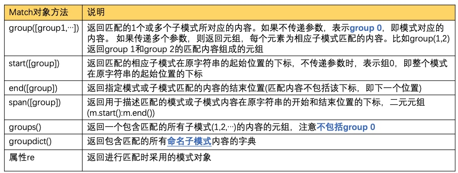
- 【对于 regexp.search(text) 所返回的 Match 对象，有上面的几个常用方法，用法详见下面的 finditer 中的例子】
match¶
match(string[, pos[, endpos]])与search类似，只是要求模式(pattern)出现在字符串开头或指定范围的开头，等价于正则表达式模式为^patternfullmatch(string[, pos[, endpos]])要求模式完整匹配字符串，即模式的最前面为字符串开头或 指定范围的开头，最后面为字符串尾部或指定范围的尾部，等价于^pattern$
finditer¶
- search方法只能找到第一个与模式匹配的match对象
- finditer(string[, pos[, endpos]]): 返回一个迭代器，该迭代器会每次返回匹配 的下一个match对象
regexp = re.compile('((jump)ed for) (food)')
text = 'The quick brown fox jumped for food. The lazy black dog jumped for food.'
matches_iter = regexp.finditer(text)
for count, match in enumerate(matches_iter, 1):
print('{} found "{}" at [{},{}]'.format(count, match.group(), *match.span()))
for k, v in enumerate(match.groups(), 1):
print(' group %d: %s, span %s' % (k, v, match.span(k)))
findall¶
findall(string[, pos[, endpos]])- 在字符串或指定范围搜索与模式匹配的字符串，返回一个列表，包含了所有匹配的内容
- 如果模式中没有组(子模式) ，则列表的每个元素为所有与模式匹配的内容
- 如果模式中有组(子模式) ，则匹配结果中仅包括与子模式匹配的字符串，整个模式匹配的内容 (group 0)并没有包含在内。如果有多个组(子模式) ，则每次匹配的结果以tuple形式组织，即 [(group 1,group2…,groupN), (.....), ....., (.....)]
- 如果最后的输出既想要子模式也想要模式匹配的内容，则模式定义中应该用group包含所有的内容【最外面用 () 包含起来】
正则表达式：模块的方法¶
- 前面的例子都是调用re.compile创建一个模式对象，然后调用模式对象的方法
-
re模块也提供类似的方法： re.search(pattern, string, flags) 等价于 re.compile(pattern, flags).search(string)
- 传递的参数是正则表达式pattern、待查找的字符串和匹配选项
- re模块的方法无法传递pos/endpos参数，即搜索的范围只能为整个字符串
- 返回的对象与模式对象的方法一致，如果找到匹配结果，返回Match对象，没有找到，返回None 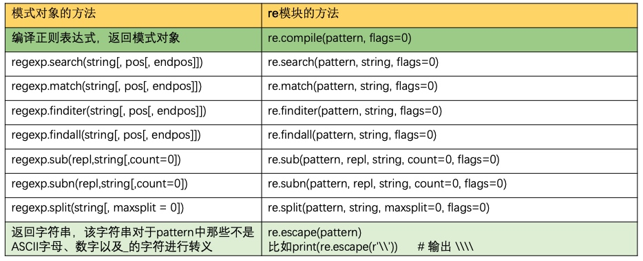
-
两种方法都可以使用
- 在调用re模块的search…/sub/split等方法时，其内部实现也是首先调用compile创建一个模式 对象，然后调用模式对象的方法，而且其内部对于模式对象进行了缓存，下次再传递相同的正则表达式时会重用前面compile的模式对象
- 如果在循环外部调用，两者的性能没有什么区别
- 如果在一个循环内部调用，则使用模式对象的方法可节省多次函数调用（不需要每次调用 compile…)
正则表达式¶
- 具有特殊含义的元字符包括
. ^ $ * + ? { } [ ] \ | ( )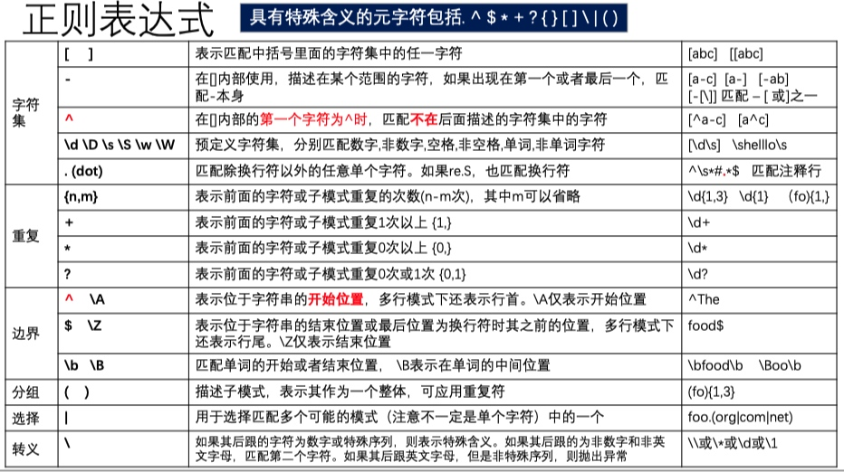
元字符 转义字符¶
【注意转义字符 后面只有接字母或数字才有特殊含义，接其他字符都表示匹配该字符（例如 本身）】
- \后跟着某些(英文字母)字符有特殊含义，表示预定义字符集或边界匹配等， \A \b \B \d \D \s \S \w \W \Z
- 还支持与字符串类似的标准转义序列，包括\a \t \n \v \f \r \xhh(十六进制的ASCII码对应的字符) \uXXX \UXXXX (十六进制的Unicode码对应的字符），注意字符串中\b表示Backspace字符，但是在正则表达式中 \b表示单词的开始或结束位置
- \后跟英文字母，且不在上面给出的合法序列中，则会抛出异常(bad escape)
- \后跟数字N，表示匹配前面编号为N的子模式(组)匹配的内容
- \后跟着非数字和非英文字母的字符，表示匹配该字符(前面的\去除)，比如\ 匹配反斜杠 ( 匹配左括号
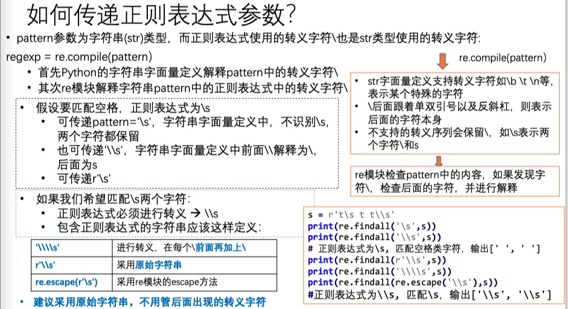
- 【小结】如何传递正则表达式参数？（以字符串形式描述）
- 正则表达式中的 pattern 参数是 str 类型的，需要通过字符串的字面量定义传入；
- 一方面，python 在接受字面量定义的时候需要进行转义；另一方面 re 解释字符串的过程中也需要进行转义；而两者的转义字符均为
\，但解释的方式不同（例如 ‘\s’ 在字面量定义时由于没有匹配因此就是反斜杠+s，而在正则表达式中 ‘\s’ 则表示空字符）； - 因此，安全方便的做法是用原始字符串定义 pattern，这样就可以专注于正则表达式的语法而不需要关注字面量定义时的转义语法
s = r't\s t t\\s' # 定义字符串字面量，没有 \s 所以会保留 '\s'
print(re.findall('\s',s))
print(re.findall('\\s',s)) # 正则表达式为\s, 匹配空格类字符，输出[' ', ' ']
print(re.findall(r'\\s',s))
print(re.findall('\\\\s',s))
print(re.findall(re.escape('\\s'),s)) #正则表达式为\\s, 匹配\s，输出['\\s', '\\s']
re.escape(pattern)¶
- 返回字符串，该字符串对于pattern中那些不是ASCII字母、数字以及_的字符前面插入一个反斜杠，作为正则表达式模式时匹配pattern本身
- \后跟着非数字和非英文字母的字符，表示匹配该字符，比如\ 匹配反斜杠 ( 匹配左括号
- re.escape(pattern)用于动态构建正则表达式，要求匹配pattern里面的字符，避免pattern里 面的字符被re解释为特殊的含义
- 【例子】下例中，第三个定义的字面量 ‘\t’ 首先被解释为 tab 符号；re.escape() 在其前面插入了一个反斜杠（匹配的时候忽略反斜杠）
print('\t') # tab 符号
print(r'\t') # \t
print(re.escape('\t')) # 反斜杠+tab 符号
print(re.escape(r'\t')) # \\t
正则表达式元字符-字符集¶
- 字符集：由一对[]方括号括起来的字符集合，定义方式如下
[xyz]:枚举字符集，匹配括号中任意字符[a-z]:指定范围的字符，匹配指定范围的任意字符。- ‘[a-zA-Z0-9]’可以匹配一个任意大小写字母或数字
- 连字符放在最前面或最后面，表示连字符本身，比如 ‘[0-]’
[^xyz]:否定枚举字符集，匹配不在后面给出的字符集中的任意字符- ^只有出现在第一个位置才表示否定
- ’[^a-z]’ 可以匹配非小写英文字母的字符，但 [a-z^] 匹配小写英文字母或者^
正则表达式元字符-预定义字符集¶
- 预定义字符集：一些字符集经常会用到，系统定义了若干预定义字符集。缺省的匹配选项隐含了re.U， 表示是unicode意义上的数字、字母的定义。选项 re.A表示是ASCII字符集中的数字、字母的定义
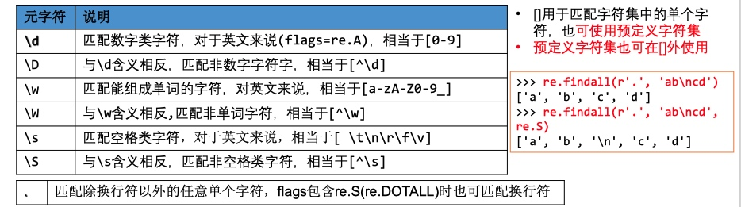
正则表达式元字符-边界匹配符¶
- 0宽度边界匹配符：字符串匹配往往涉及从某个位置开始匹配，例如行的开头结尾、单词边界等，边界匹配符用于匹配字符串的位置，不会消耗模式中的字符
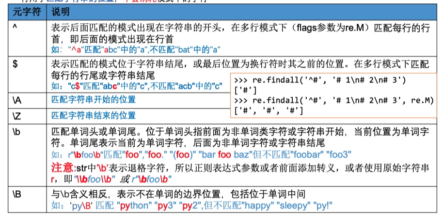
正则表达式元字符-重复限定符¶
- 重复限定符：指定重复的次数，默认采用贪婪匹配算法
- X可为单个字符或通过小括号包含的子模式（作为一个整体）
- 贪婪匹配算法是指正则表达式引擎尽可能多（leftmost or largest)匹配要重复的前导字符或子模式，只有当这种重复引起整个模式匹配失败的情况下，引擎才会进行回溯（尝试稍短的匹配）
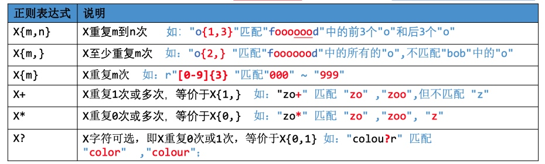
- 如果在重复限定符后面加后缀”?”，表示使用懒惰匹配算法
- 懒惰匹配算法是指正则表达式引擎尽可能少地进行重复匹配，只有当这种重复引起整个正则表达式匹配失败的情况下，引擎会进行回溯(匹配更多的字符）
- 【例】想要匹配
<book><title>Python</title><author>Dong</author></book>中用方括号标识的，不能采用<.+>因为贪婪匹配会将整个字符串包含进去；- 可用
<.+?>尽可能少地匹配一个以上字符，后面为> - 还可以用
<[^>]+>尽可能多地匹配一个以上非>字符，后面为>
- 可用
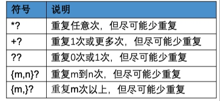
正则表达式元字符-分组符¶
- 分组符”()”：将要匹配的模式进一步分组，也称为子模式
- 在获得匹配的模式的同时也可以获得各个匹配的子模式
- ()包含的子模式内的内容作为一个整体出现,可以应用前面介绍的重复限定符，表示子模式重复多次
- 子模式重复限定符之后也允许附加一个?，表示采用懒惰匹配
- 一旦引入分组，则findall返回的列表中仅仅包含分组所匹配的内容，因此如果想要包含全部匹配的模式，需 要使用分组符将所有要匹配的内容包含起来
- search/finditer方法返回的是match对象，可以通过match.group()来返回全部匹配的模式(即group 0)
- 【例】
pattern1 = r'((\d{2})-)?(\d{2,3})-(\d{7,8})'用来匹配可能有的国家号-区号-本地号码格式
text = '202.120.225.10 8.8.8.8 127.0.0.1'
re.findall(r'\d{1,3}\.\d{1,3}\.\d{1,3}\.\d{1,3}', text)
# ['202.120.225.10', '8.8.8.8', '127.0.0.1']
re.findall(r'(\d{1,3}\.){3}\d{1,3}', text)
# ['225.', '8.', '0.']
re.findall(r'((\d{1,3}\.){3}\d{1,3})', text)
# [('202.120.225.10', '225.'), ('8.8.8.8', '8.'), ('127.0.0.1', '0.')]
不捕获分组 (?¶
- 有的时候可能要进行分组，但用户并不关心某个子模式具体匹配的内容是什么
- 可以通过在(后面添加?: 表示对该分组匹配的内容不感兴趣，不捕获，即(?:pattern)
- 不感兴趣的组也不占用组编号
- 【例】
pattern2 = r'(?:(\d{2})-)?(\d{2,3})-(\d{7,8})'其中第一个分组加了 (?: 表示不捕获
命名分组¶
- 可以给分组(子模式)命名，方便引用，而且更改正则表达式也不会有影响
- 【例】
pattern3 = r'(?:(?P<country>\d{2})-)?(?P<city>\d{2,3})(?P<phone>\d{7,8})'分别给了三个分组命名
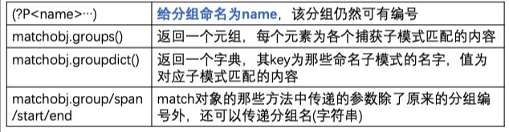
分组引用¶
- 正则表达式还支持分组引用(backreference)，表示要匹配前面相应子模式所匹配的内容
\N表示匹配的内容为前面编号为N的分组匹配的内容，注意N不能是后面的分组编号，也不能为0(?P=name)表示引用前面组名为name的命名分组匹配的内容
- 【例】匹配连续出现的两个相同单词
pattern = r'(\b\w+)\s+\1'pattern = r'(?P<word>\b\w+)\s+(?P=word)'- 上面的两种 pattern 均可匹配字符串中连续出现的两个相同单词；但是要注意的是这里不能用 findall 得到完整的匹配结果【注意由于需要分组引用这时不能用 (?: 来忽略该分组】；1. 可以在最外面加上一个 () 得到完整匹配；2. 可以用 match 方法
pattern = r'(?P<word>\b\w+)\s+(?P=word)' # 采用分组命名实现分组引用
match = re.search(pattern,'Paris in the the spring')
print('group word:', match.group('word')) # 可以用 match.group('word') 得到所匹配的命名分组
print(match.group())
分组/子模式扩展语法¶
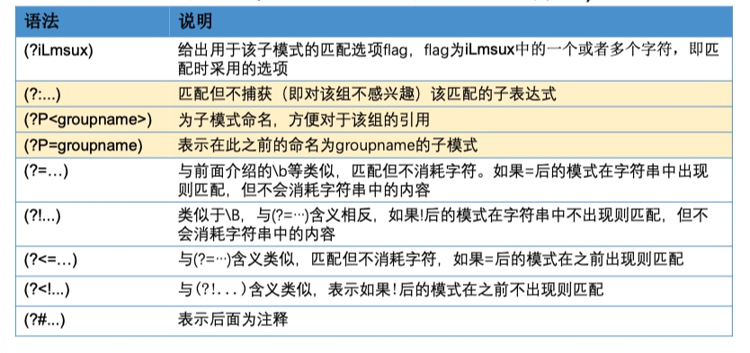
正则表达式元字符-选择符¶
pattern1|pattern2|pattern3- 选择符”|”，用于选择匹配多个可能的子模式（注意不一定是单个字符）中的一个
- 选择符”|”的优先级最低（最后计算），如需要可使用( )来限制选择符的作用范围 (pattern1|pattern2|pattern3)
re模块主要方法¶
sub¶
re.sub(pattern, replace, string[, count=0])- 将字符串string中与pattern匹配的内容用replace替换，返回新的字符串。count表示最多替换多少次，缺省为0，表示全部替换。替换字符串replace可以包含分组引用 \N(不支持分组0），表示第N个分组匹配的内容
- re.subn(pattern, replace, string[, count=0]) 与sub类似，只是返回的是一个元组，第一个元素为替换后产生的新字符串，而第二个元素为总共替换的次数
reobj.sub(replace, string [, count=0])- 【补充】参数 replace
- 参数replace传递的为字符串，表示替换成replace，在replace中可包含分组引用\N
- 参数replace也可以传递一个函数对象，该函数的参数为pattern所匹配的match对象。表示替换为调用replace(matchobj)所返回的字符串【下面给了一个很傻的例子，定义了函数 repl_func(match) 要将一个比较语句用相反的形式表达出来。】
def re_sub_func():
text = 'Banana is better than apple'
pattern = r'\b([BC]\w*)\b\s+is\s+(better|worse)\s+than\s+(\w+)\b'
# B或C开头的单词 一个以上空格 is 空格 better或worse 空格 than 空格 单词
def repl_func(match):
first = match.group(1)
last = match.group(3)
return '%s is %s than %s' % (last.capitalize(), 'worse' if match.group(2) == 'better' else 'better', first.lower())
text_ = re.sub(pattern, repl_func, text)
print()
print(text_)
split¶
re.split(pattern, string[,maxsplit=0])reobj.split(string[, maxpslit=0])- 根据pattern分割字符串string，返回分割后的字符串列表，maxsplit为分割的最大次数，缺省为尽最大可能分割
- 【不指定 pattern 就是默认用空白字符分割，还会去除前后的空白字符，见下例】
- 拓展：如果pattern中包含捕获子模式，则作为分隔符的其中所有子模式的内容也在返回的字符串列表中 → 通过(?:…)表示不要捕获该子模式
# 例子，去除字符串中多于的空白字符
text = 'aaa\t bb \n c dd ffff '
print(' '.join(text.split())) # str的split方法用空格类字符分割字符串
print(' '.join(re.split('\s+',text.strip())))
print(re.sub('\s+', ' ', text.strip()))
实例¶
【下面是几个作业题】
- 验证一个字符串是否为一有效电子邮件格式
- 从输入字符串中清除HTML标记
# 验证一个字符串是否为一有效电子邮件格式
mail = 'cs@fudan.edu.cn'
pattern = re.compile(r'(?P<name>\w+)@(?P<url>(?:\w+\.){1,2}\w+)') # 匹配域名长度为 2-3
# 可用两个命名分组
match = re.match(pattern, mail.strip())
print(match['name'], match['url'])
# 从输入字符串中清除HTML标记
txt = '<a href="index.htm">Welcome to Fudan University!</a>'
re.sub(r'<.+?>', '', txt)
函数¶
- 编程语言中的函数
- 接收相应的参数，通过执行一系列的语句来完成相应的功能，最后再返回结果
- 在实际开发中，有许多操作是完全相同或非常相似的，仅仅是要处理的数据不同
- 通过将可能需要反复执行的代码封装为函数，实现代码的复用，保证代码的一致性
- 每个函数解决一个相对独立的问题，不要太复杂
- 尽量减少全局变量的使用，通过参数传递体现调用者和函数实现之间的关系，减少副作用
函数参数类型¶
- Python函数的定义非常灵活，在定义函数时只需要指定参数的名字，而不需要指定参数的类型
- 形参的类型完全由调用者传递的实参类型以及Python解释器的理解和推断来决定，类似于重载和泛型(polymorphism)
- 函数编写如果有问题，只有在调用时才能被发现，传递某些参数时可能执行正确，而传递另 一些类型的参数时可能出现错误
- type hint: 给变量、参数和返回值加上annotations，集成开发环境可检查调用和执行过程中是否有类型错误【如下例】
def func(text: str, times: int) -> None:
print(text * times)
return None
- 函数定义中的形参顺序
- 位置参数 - 缺省值参数 - 可变长度位置参数 - 仅允许关键字传递参数（可定义缺省值，也可不定义） - 可变长度关键字参数
- 函数调用中的实参顺序: 位置参数 → 关键字参数
- 【例】_trace函数: 跟踪用户自定义的函数的调用，利用函数对象的属性(这 里使用calls)来保存函数调用的状态信息(调用了多少次)。注意内置函数不支持用户自定义的属性
def _trace(func,*args,**kwargs):
if hasattr(func, 'calls'): #对象func是否有属性calls存在
func.calls += 1
else:
func.calls = 1
if not kwargs:
txt = '[%d] calling function: %s(%s)'% (func.calls, func.__name__,
','.join([str(item) for item in args]))
else:
kws = ','.join(['{}={}'.format(key, str(value)) for key, value in kwargs.items()])
_args = ','.join([str(i) for i in args])
txt = '[{}] calling function: {}({}, {})'.format(func.calls, func.__name__, _args , kws)
print(txt)
return func(*args,**kwargs) # 函数调用时的序列解包
def demo(a,b=4,*x, **y):
print(a, b, x, y)
_trace(demo, 1)
_trace(demo, 1, 2)
_trace(demo, 1, 2, 3, 4, c=9, d=8)
案例¶
- 编写函数, 接收一个列表lst和一个整数k作为参数, 将lst中元素原地循环左移k位, 移出的元素转 移到lst后部. 要求: 不得使用其它列表保存中间值.
# 编写函数, 接收一个列表lst和一个整数k作为参数, 将lst中元素原地循环左移k位, 移出的元素转 移到lst后部. 要求: 不得使用其它列表保存中间值.
# 算法思路: 将lst中下标k之前（不包括）的元素逆序, 下标k及其后的元素逆序, 最后将整个列表逆序
def demo4(lst, k):
x = lst[:k]
x.reverse()
y = lst[k:]
y.reverse()
r = x + y
r.reverse()
return r
def demo4_2(lst, k):
"""原地修改"""
lst[:k] = reversed(lst[:k])
# lst[:k] = lst[k-1::-1] 也可以
lst[k:] = reversed(lst[k:])
lst.reverse()
map¶
- 内置函数map将一个函数作用到一个序列或可迭代对象上
- map(func, iterable) : 返回一个map对象，该对象是一个迭代器，其每个元素为对iterable 对象的元素调用相应函数func的结果，即每个元素为func(element)
- 等价于
(func(i) for i in iterable) - 在Python语言的发展过程中，是首先有map/filter这些内置函数，后来引 入列表推导式
- map和filter的功能也可用
filter¶
- 内置函数filter将一个函数作用到一个可迭代对象上
- filter(func, iterable) : 返回一个filter对象，该对象是一个迭代器，iteralbe对象中的元素作为参数调用func，如果func(element)返回True，则该元素作为filter对象中的元素。如果filter函数的第一个参数为None，则iterable对象的元素真值判断为True时作为filter对象中的元素
filter(None, iterable)None 表示判断元素是否非空，等价于filter(lambda x: x, iterable，也等价于 (i for i in iterable if i)filter(func, iterable)根据函数返回值进行 filter，等价于 (i for i in iterable if func(i))
s = 1, 2, '', 0, -1, []
list(filter(None, seq))
s = ['foo', 'x41', '?!', '***']
list(filter(lambda x:x.isalnum(), s))
[x for x in s if x.isalnum()] # 等价
functools.reduce(func, iterable)¶
- 将可迭代对象的所有元素进行归约，将它们归并在一起
- func的第一个参数为前面规约的结果（初始为第一个元素），第二个参数为当前元素，返回将当前元素归约后的结果
- 初始归约结果为第1个元素，从第2个元素开始调用func(sum,element)，直到最后一个元素
from functools import reduce
seq=[1, 2, 3, 4, 5, 6, 7, 8, 9]
def add(x, y):
return x + y
reduce(add, range(10))
reduce(add, map(str, range(10)))
reduce(lambda x,y:x + y, seq)
生成器函数 yield¶
- 第二章介绍了生成器表达式，运算结果为生成器对象： ( x ** 2 for x in range(10))
- 不是一次返回全部数据，而是一个iterator对象，通过next内置函数获得下一个元素
- 生成器函数可创建生成器对象
- 生成器函数是函数的一种，普通函数原来通过return语句返回值，现在通过yield expression语句返回值
- 调用生成器函数的结果是得到一个生成器对象，调用next时得到一个元素
- 每次调用next时相当于：
- 执行生成器函数中给出的代码直到遇到yield语句或 者从生成器函数中返回
- 如果遇到yield语句，暂停生成器函数的执行，并返 回yield语句所给出的表达式
- 下次next调用时从暂停的地方恢复继续执行
- 语句执行到从生成器函数中返回，则抛出异常
StopIteration
- yield from iterable: 调用next时返 回可迭代对象的下一个元素【见下例】
- itertools模块中包含了多个迭代器， 包括count/cycle/repeat/chain等
def f():
# for i in 'welcome to the python world.':
# yield i
txt = 'welcome to the python world.'
yield from txt
print(list(f()))
- 下面介绍一个经典的例子：生成 Fibonacci 数列
def fib(n):
"""返回第一个大于 n 的斐波那契数"""
prev, curr = 1, 1
while prev < n:
# print(prev, end=' ')
prev, curr = curr, prev + curr
# print()
return prev
def fib2():
"""生成器函数：返回一个生成斐波那契数列的生成器"""
prev, curr = 1, 1
while True:
yield prev
prev, curr = curr, prev + curr
# 得到斐波那契数列的大于 10 的那个数
print(fib(10)) # 用第一种方式
# 用生成器函数的方式
f = fib2()
i = next(f)
while i < 10:
i = next(f)
print(i)
# 返回前10个数： 1 1 2 3 5 8 13 21 34 55
a = fib2()
for i in range(10):
print(next(a), end=' ')
print()
# 返回1000以内的fibonacci数
count = 0
for i in fib2():
if i > 1000:
break
print(i, end='\t')
count += 1
if count % 5 == 0:
print()
装饰器(decorator)¶
- 装饰器为被装饰器对象添加额外功能
- 在函数定义行前面通过@before，给函数添加装饰器before，等价于：
func = before(func) - 使用装饰器后一般并不需要改变原来调用该函数的代码
def before(func):
def wrapper_before(*args, **kwargs):
print('calling %s' % func.__name__)
return func(*args, **kwargs)
# print('Clousure: ', wrapper_before.__closure__)
return wrapper_before
@before
def f(x, y, z):
print(x, y, z)
f(1, 2, z=4)
常用模块¶
string¶
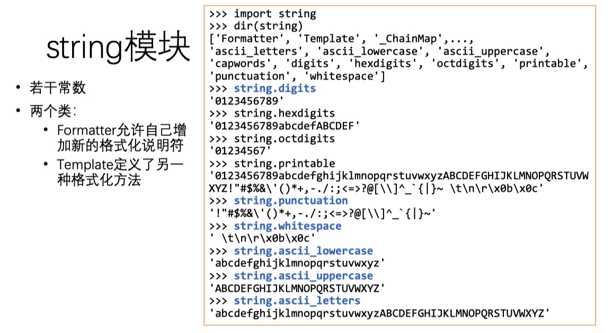
random¶
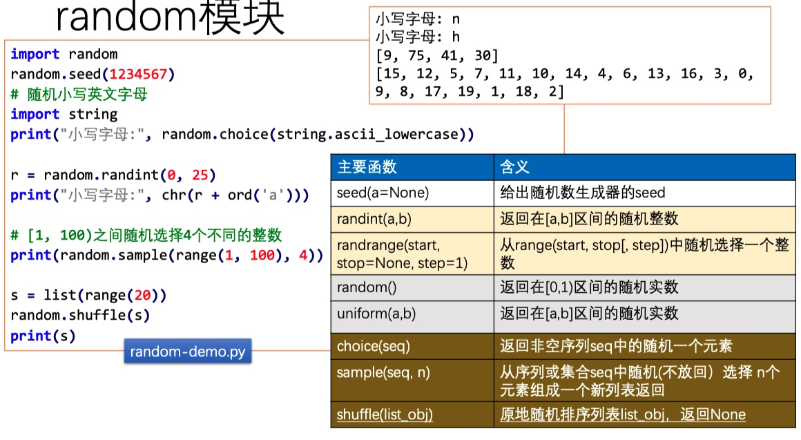
sys¶
- argv 该列表保存了传递给解释器的命 令行参数, argv[0]为脚本名。常使 用
argparse模块分析 - exit([status]) 退出解释器，status给出了程序执行是否成功
- 下面简单用 sys 模块，实现在命令行中判断是否为 debug 模式
import sys
args = sys.argv[1:] # 获取命令行参数，sys.argv 的第一个参数为脚本文件名
debug = args and args[0] == '-d'
if debug:
args = args[1:] # 获取 -d 模式下的参数
print('[Debuging]...')
print(args)
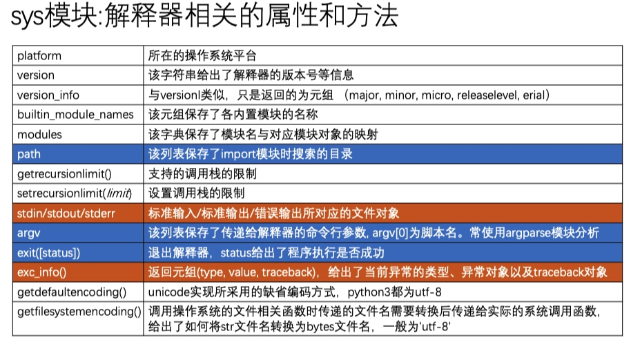
time¶
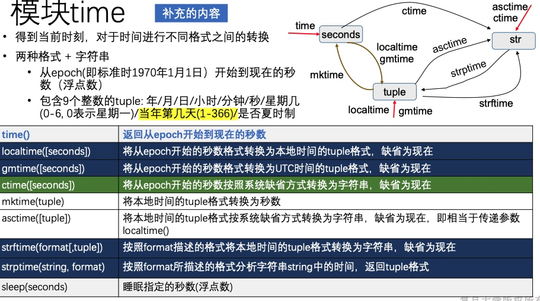 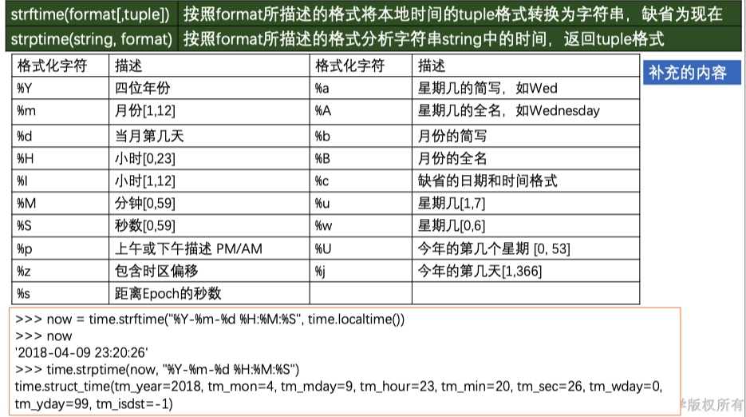
datetime¶
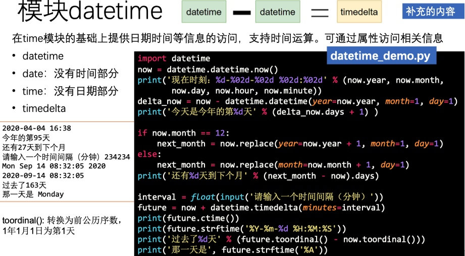
collections¶
【collections引入了更多的类型来支持更多的数据结构】
- defaultdict 特殊的字典，在没有指定value时采用缺省值factory()
- OrderedDict 有序的字典，保留元素插入的顺序
- Counter 保存对象出现次数的字典
- ChainMap 用于将多个字典组合在一起，提供类似于字典的接口
- UserDict 封装了一个字典对象，便于扩充编写自己定制的字典
- deque 双向队列，提供类似于列表的接口，在队列头和尾部增加和删除元素时非常快
- UserList 封装了一个列表对象，便于扩充编写自己定制的列表
- UserString 封装了一个字符串对象，便于扩充编写自己定制的字符串
- namedtuple 特殊的元组，可以通过名字来访问元组中的元素
collections.defaultdict¶
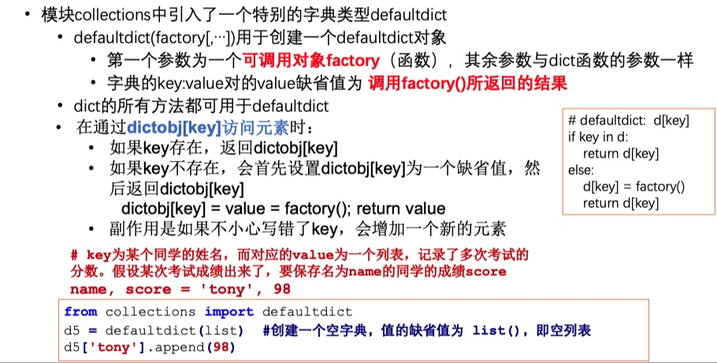
from collections import defaultdict
d5 = defaultdict(list) #创建一个空字典，值的缺省值为 list()，即空列表
d5['tony'].append(98)
collections.OrderedDict¶
- 从语言的角度，Python内置字典对于应用来说是无序的
- Python3.6以前的版本不保留插入的顺序
- Python3.6的实现中保留插入的顺序
- python3.7中确认python语言中字典保留插入的顺序
- 如果要求保留插入顺序，应该采用collections.OrderedDict，dict的所有方 法都可以使用
collections.Counter¶
- 一种特殊的字典，在传递非map类型的可迭代对象时，有特别的处理，保存了各个元素出现的次数
- 在调用构造函数创建Counter对象时:
- 如果传递的为map类型，则相当于原有map类型的shallow copy
- 如果通过关键字参数传递，与原有dict类型类似，等同于构造一个字典
- 如果传递的为非map类型的可迭代对象，则创建的Counter对象中，key为可迭代对象的元素， 而value为该key在原可迭代对象中出现的次数 即
iterable.count(key)
- Counter是一种特殊的字典，所以原有字典中的方法(get,setdefault, k pop,popitem)都可以使用，只是Counter对于update方法有了改变，另外还增加一些新的方法，也 支持 + - 运算符
update(another)方法不是替代原有的key:value，而是 在原有的value基础上加上another中相应元素出现的 次数- 引入
subtract(another)：当前计数器对象中的元素出 现的次数减去another对象中元素出现的次数 - 还支持与另外一个Counter对象的加减法运算，包括 += -= + - 运算符
elements()：返回一个迭代器，其元素为Counter中的 key，如果该key对应的值大于1，则key会重复出现相 应的次数most_common(n=None): 返回一个n个元素的列表， 每个元素为(key, value)，按照key出现的次数(value) 从大到小排列，即返回前面n个出现次数最多的 (key,value)。如果n=None，返回包括所有元素的列表
collections.namedtuple¶
- 要访问元组中的元素，需要通过下标访问，可读性不强，修改代码也不方便
- 希望能够在元组类型的基础上，为原来的元组的下标加上一个字段名(别名)，除了仍然可以用下标外，还可以通过属性来访问元组中的元素
- 函数namedtuple(typename, fieldname)是一个工厂函数，返回一个新的类型，该类型是一个特别的元组类型，与tuple类似，只是除了支持tuple原来的方法和运算符外，作了一些扩展
- 第一个参数typename为字符串，给出了新类型的名称
- 第二个参数fieldname给出了元组对应位置的别名
- 可以是一个元素为字符串的迭代对象， 比如[‘x’, ‘y’]
- fieldname也可以是通过空格分割的多个字符串，或通过逗号分割的多个字符串， 比如’x y’或者’x, y‘
- fieldname中包含的字段名必须满足python标识符的要求，且不能以下划线开头
New_Type = collections.namedtuple('Point', 'x y')- 相较于 tuple 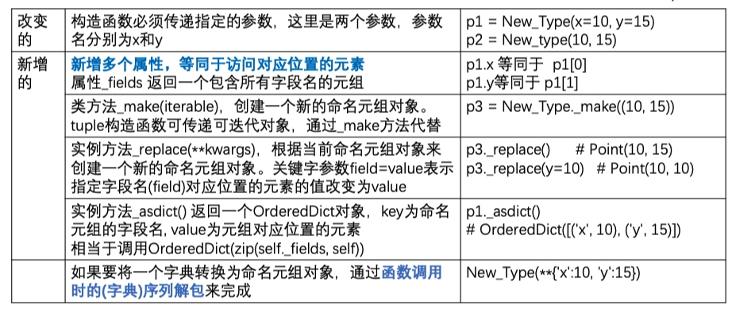
- 首先用函数namedtuple(typename, fieldname) 创建一个特别的元组类型，为原来的元组的下标加上一个字段名(别名)，可以通过属性来访问元组中的元素，增强了可读性
- 使用上述创建的新类型，调用相应的构造函数（通过位置参数或关键字参数传递来指定对应位置的元素）创建一个命名元组对象，该对象可以使用原有元组类型的所有方法
- 可以通过对象的属性来访问命名元组对象中对应位置的元素
- 新类型还支持多个新的方法，这些方法以下划线开头，避免与字段名冲突
- 包括属性
_fields、类方法_make(iterable)、_replace(**kwargs)和_asdict()
- 包括属性
logging¶
import logging
logging.basicConfig(filename='main.log',
format='%(asctime)s [%(levelname)s] %(message)s',
level=logging.DEBUG)
logging.info('logging started.')
- level 哪些级别之上(从低到高分别为 DEBUG,INFO,WARNING, ERROR,FATAL)的消息记录，缺省 WARNING
- filename 记录在哪个文件，缺省标准输出
- format 日志格式如何，缺省
'%(levelname)s:%(name)s:% (message)s' - 主要方法
- debug(msg)
- info(msg)
- warning(msg)
- error(msg)
- fatal(msg)
- exception(e)